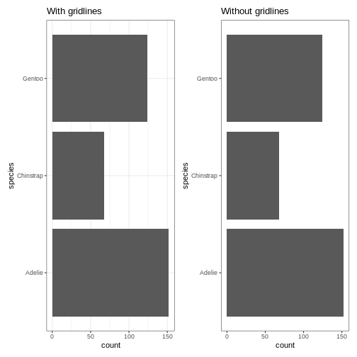

Content from Reproducible Data Analysis
Last updated on 2024-10-07 | Edit this page
Estimated time: 12 minutes
Overview
Questions
- How do I ensure that my results can be reproduced?
Objectives
- Explain how to use markdown
- Demonstrate how to include pieces of code
Introduction
A key concept in the scientific process is reproducibility. We should be able to run the same experiment again, and get, more or less, the same result.
We will not always get the same result, applying the same functions on the same data - some statistical techniques relies on randomness.
An example is k-means, that clusters data based on randomly selected initial centroids.
This also applies to the analysis of data. If we have a collection of measurements of blood pressure from patients before and after they have taken an antihypertensive drug, we might arrive at the result that this specific drug is not working. Doing the same analysis tomorrow, we should reach the same result.
And that can be surprisingly difficult!
There are a lot of pitfalls, ranging from accessibility to incentive structures in academia. But the two areas where R can help us are:
- Software Environment
- Documentation and Metadata
- Complex Workflows
Software Environment
Data analysis is done using specific software, libraries or packages, in a variety of versions. And it happens in an environment on the computer that might not be identical from day to day.
One example of these problems is shown every time we load tidyverse:

This message informs us that there is a filter()
function in the stats packages which is part of the core
R-installation. That function is masked by the filter()
function from the tidyverse´ packagedplyr`.
If our analysis relies on the way the filter() function
works in the tidyverse, we will get errors if
tidyverse is not loaded.
We might also have data stored in memory. Every time we close RStudio, we are asked if we want to save the environment:

This will save all the objects we have in our environment, in order for RStudio to be able to load them into memory when we open RStudio again.
That can be nice and useful. On the other hand we run the risk of
having the wrong version of the
my_data_that_is_ready_for_analysis dataframe lying around
in memory.
In addition we can experience performance problems. Storing a lot of large objects before closing RStudio can take a lot of time. And loading them into memory when opening RStudio will also take a lot of time.
On modern computers we normally have plenty of storage - but it is entirely possible to fill your harddrive with R-environments to the point where your computer crashes.
Documentation and Metadata:
What did we actually do in the analysis? Why did we do it? Why are we reaching the conclusion we’ve arrived at?
Three very good questions. Having good metadata, data that describes your data, often makes understanding your data easier. Documenting the individual steps of your analysis, may not seem necessary right now - you know why you are doing what you are doing. But future you - you in three months, or some one else, might not remember or be able to guess (correctly).
Complex Workflows
Doing data analysis in eg Excel, can involve a lot of pointing and clicking.
And in any piece of software, the analysis will normally always involve more than one step. Those steps will have to be done in the correct order. Calculating a mean of some values, depends heavily on whether it happens before or after deleting irrelevant observations.
The solution to all of this!

Working in RMarkdown allows us to collect the text describing our data, what and why we are doing what we do, the code actually doing it, and the results of that code - all in one document.
Open a new file, choose RMarkdown, and give your document a name:

The code chunks, marked here with a light grey background, contains code, in this case not very advanced code. You can run the entire code chunk by clicking the green arrow on the right. Or by placing your cursor in the line of code you want to run, and pressing ctrl+enter (or command+enter on a Mac).
Outside the code chunks we can add our reasons for actually running
summary on the cars dataframe, and describe
what it contains.
You will see a new button in RStudio: 
Clicking this, will “knit” your document; run each chunck of code, add the output to your document, and combine your code, the results and all your explanatory text to one html-document.
If you do not want an HTMl-document, you can knit to a MicroSoft Word document. Depending on your computer, you can knit directly to a pdf.
Having the entirety of your analysis in an RMarkdown document, and then running it, ensures that the individual steps in the analysis are run in the correct order.
It does not ensure that your documentation of what you do is written - it makes it easy to add it, but you still have to do it.
But what about the environment?
So we force ourself to have the steps in our analysis in the correct order, and we make it easy to add documentation. What about the environment?
Working with RMarkdown also adresses this problem. Every time we
knit our document, RStudio opens a new session of R,
without libraries or objects in memory. This ensures that the analysis
is done in the exact same way each and every time.
This, on the other hand, requires us to add code chunks loading libraries and data to our document.
Try it yourself
Make a new RMarkdown document, add library(tidyverse) to
the first chunk, add your own text, and change the plot to plot the
distance variable from the cars data set.
Make a new RMarkdown document - File -> New File -> R Markdown.
Change the final code chunk to include plot(cars$dist)
instead of plot(pressure)
Key Points
- Use RMarkdown to enforce reproducible analysis
Content from Reading data from file
Last updated on 2024-10-07 | Edit this page
Estimated time: 12 minutes
Overview
Questions
- How do you read in data from files??
Objectives
- Explain how to read in data from a selection of different data files.
Introduction
The first step of doing dataanalysis, is normally to read in the data.
Data can come from many different sources, and it is practically impossible to cover every possible format. Here we cover some of the more common.
The most important point is that there is a very high probability that at least one package exists that is designed to read a specific weird data format.

Use code!
RStudio makes it simple to load most common data formats. Right-click on the file in RStudio, and choose import. RStudio will then provide an interface for loading the data.

However in general we prefer to have a script or a document, that can be run without us pointing and clicking. So - instead of importing the data in this way, copy the code that RStudio uses to import the data, and paste it into your script or document.
CSV-files
The most basic file type for storing and transferring data. A “simple” textfile, containing tabular data. One line of text for each row of data, each cell in that row, corresponding to a column, separated with a separator, typically a comma.
Many languages use commas as decimal separators. That neccesitates an option for using something else than a comma. Typically a semicolon.
Truly commaseparated files
Use read.csv() (from base-R) or read_csv()
(from readr, included in tidyverse)
We recommend using read_csv().
Semicolon separated files
Use read.csv2() (from base-R) or
read_csv2() (from readr, included in
tidyverse)
We recommend read_csv2()
What they have in common
read_csv and read_csv2 take a lot of
arguments that can control datatypes, handling of headers etc. For most
use, the default options are enough, but if you need to adjust
something, there are plenty of options for that.
guess_max
read_csv and read_csv2 tries to guess the
datatypes in the file, and will convert the data accordingly. That will
return a dataframe where date-time data is stored as such. The functions
by default reads the first 1000 rows, and makes a guess on the datatype
based on that.
That can lead to problems if the first 1000 rows of a column contain
numbers, and row 1001 contains text. In that case the entire row will be
coerced to numeric, and the following rows will contain
NA values. Adjust the argument guess_max to
something larger to catch this problem.
To include every row in the guess, add guess_max = Inf -
but be careful if you have a very large dataset.
Excel-files
Use the readxl package. Excel comes in two variants,
xls and xlsx. read_excel() makes
a qualified quess of the actual type your excel-file is. Should we need
to specify, we can use read_xls() or
read_xlsx().
Workbooks often contains more than one sheet. We can specify which we want to read in:
read_excel(path = "filename", sheet = 2)
Which will read in sheet number 2 from the workbook “filename”.
Read the documentation for details on how to read in specific cells or ranges.
SPSS
SPSS, originally “Statistical Package for the Social Sciences”, later renamed “Statistical Product and Service Solutions” is a proprietary statistical software suite developed by IBM.
Not surprisingly it is widely used in social science.
The package haven supports reading SPSS (Stata and SAS)
files
Use the package to read in spss files:
R
library(haven)
read_spss("filename")
The function returns at tibble.
Note that SPSS uses a variety of different formats.
read_spss() will make a guess of the correct format, but if
problems arise, try using one of the other functions provided in
haven
Stata
Stata is a proprietary statistical software package, used in a multitude of different fields, primarily biomedicine, epidemiololy, sociology and economics.
As mentioned above, hte haven package provides functions
for reading Stata files:
R
library(haven)
read_stata("filename")
The function returns at tibble.
As with SPSS Stata uses a couple of different fileformats, and
read_stata makes a guess as to which format is used. If
problems arise, haven has more specific functions for
reading specific file formats.
SAS
SAS is a proprietary statistical software suite developed by SAS Institute.
As mentioned above the package haven can read
SAS-files:
R
library(haven)
read_sas("filename")
The function returns at tibble.
As with SPSS and Stata, SAS uses a couple of different fileformats,
and read_sas tries to guess the correct format.
If problems arise, haven has more specific functions for
reading specific file formats.
JSON
Not all data come in a nice rectangular format:
CountryUSA |
NameNASA |
Phonenumber
|
|
| White House |
(202)-456-1111 |
||
| Russia | Kremlin | 0107-095-295-9051 | |
| Vatican | The Pope | 011-39-6-6982 | |
There are two locations in the US, and one of them have two phonenumbers. These kinds of structure, where one row contains data with more than one row (etc), are called nested, and are typically stored or distributed in the JSON-format.
JSON can be read using fromJSON() from the
jsonlite library.
R
library(jsonlite)
fromJSON("filename")
Note that you will end up with nested columns - containing lists - which you probably will have to handle afterwards.
Other formats
In general if a piece of software is in widespread enough use that you encounter the weird file-format it uses, someone will have written a package for reading it. Google is your friend here!
Also, if you encounter a really weird dataformat, please send us an example so we can expand our knowledge.
Key Points
- The
readrversion ofread_csv()is preferred - Remember that csv is not always actually separated with commas.
- The
havenpackage contains functions for reading common proprietary file formats. - In general a package will exist for reading strange datatypes. Google is your friend!
- Use code to read in your data
Content from Descriptive Statistics
Last updated on 2024-10-07 | Edit this page
Estimated time: 12 minutes
Overview
Questions
- How can we describe a set of data?
Objectives
- Learn about the most common ways of describing a variable
Introduction
Det kan være en udfordring hvis deltagene ikke ved hvad et gennemsnit er.
En af de overordnede pointer vi gerne vil frem til her, er percentilerne og det kumulative densitetsplot - der danner grundlag for forståelsen af normalfordelingens sammenhæng med statistiske tests.
Descriptive statistic involves summarising or describing a set of data. It usually presents quantitative descriptions in a short form, and helps to simplify large datasaets.
Most descriptive statistical parameters applies to just one variable in our data, and includes:
| Central tendency | Measure of variation | Measure of shape |
|---|---|---|
| Mean | Range | Skewness |
| Median | Quartiles | Kurtosis |
| mode | Inter Quartile Range | |
| Variance | ||
| Standard deviation | ||
| Percentiles |
Central tendency
The easiest way to get summary statistics on data is to use the
summarise function from the tidyverse
package.
R
library(tidyverse)
In the following we are working with the palmerpenguins
dataset:
R
library(palmerpenguins)
Specifically the weight of the penguins, stored in the variable
body_mass_g:
R
penguins$body_mass_g
OUTPUT
[1] 3750 3800 3250 NA 3450 3650 3625 4675 3475 4250 3300 3700 3200 3800 4400
[16] 3700 3450 4500 3325 4200 3400 3600 3800 3950 3800 3800 3550 3200 3150 3950
[31] 3250 3900 3300 3900 3325 4150 3950 3550 3300 4650 3150 3900 3100 4400 3000
[46] 4600 3425 2975 3450 4150 3500 4300 3450 4050 2900 3700 3550 3800 2850 3750
[61] 3150 4400 3600 4050 2850 3950 3350 4100 3050 4450 3600 3900 3550 4150 3700
[76] 4250 3700 3900 3550 4000 3200 4700 3800 4200 3350 3550 3800 3500 3950 3600
[91] 3550 4300 3400 4450 3300 4300 3700 4350 2900 4100 3725 4725 3075 4250 2925
[106] 3550 3750 3900 3175 4775 3825 4600 3200 4275 3900 4075 2900 3775 3350 3325
[121] 3150 3500 3450 3875 3050 4000 3275 4300 3050 4000 3325 3500 3500 4475 3425
[136] 3900 3175 3975 3400 4250 3400 3475 3050 3725 3000 3650 4250 3475 3450 3750
[151] 3700 4000 4500 5700 4450 5700 5400 4550 4800 5200 4400 5150 4650 5550 4650
[166] 5850 4200 5850 4150 6300 4800 5350 5700 5000 4400 5050 5000 5100 4100 5650
[181] 4600 5550 5250 4700 5050 6050 5150 5400 4950 5250 4350 5350 3950 5700 4300
[196] 4750 5550 4900 4200 5400 5100 5300 4850 5300 4400 5000 4900 5050 4300 5000
[211] 4450 5550 4200 5300 4400 5650 4700 5700 4650 5800 4700 5550 4750 5000 5100
[226] 5200 4700 5800 4600 6000 4750 5950 4625 5450 4725 5350 4750 5600 4600 5300
[241] 4875 5550 4950 5400 4750 5650 4850 5200 4925 4875 4625 5250 4850 5600 4975
[256] 5500 4725 5500 4700 5500 4575 5500 5000 5950 4650 5500 4375 5850 4875 6000
[271] 4925 NA 4850 5750 5200 5400 3500 3900 3650 3525 3725 3950 3250 3750 4150
[286] 3700 3800 3775 3700 4050 3575 4050 3300 3700 3450 4400 3600 3400 2900 3800
[301] 3300 4150 3400 3800 3700 4550 3200 4300 3350 4100 3600 3900 3850 4800 2700
[316] 4500 3950 3650 3550 3500 3675 4450 3400 4300 3250 3675 3325 3950 3600 4050
[331] 3350 3450 3250 4050 3800 3525 3950 3650 3650 4000 3400 3775 4100 3775How can we describe these values?
Mean
The mean is the average of all datapoints. We add all values
(excluding the missing values encoded with NA), and divide
with the number of observations:
\[\overline{x} = \frac{1}{N}\sum_1^N x_i\] Where N is the number of observations, and \(x_i\) is the individual observations in the sample \(x\).
The easiest way of getting the mean is using the mean()
function:
R
mean(penguins$body_mass_g, na.rm = TRUE)
OUTPUT
[1] 4201.754A slightly more cumbersome way is using the summarise function from
tidyverse:
R
penguins %>%
summarise(avg_mass = mean(body_mass_g, na.rm = T))
OUTPUT
# A tibble: 1 × 1
avg_mass
<dbl>
1 4202.The advantage will be clear below.
Barring significant outliers, mean is an expression of
position of the data. This is the weight we would expect a random
penguin in our dataset to have.
However, we have three different species of penguins in the dataset, and they have quite different average weights. There is also a significant difference in the average weight for the two sexes.
We will get to that at the end of this segment.
Median
Similarly to the average/mean, the median is an
expression of the location of the data. If we order our data by size,
from the smallest to the largest value, and locate the middle
observation, we get the median. This is the value that half of the
observations is smaller than. And half the observations is larger.
R
penguins %>%
summarise(median = median(body_mass_g, na.rm = T))
OUTPUT
# A tibble: 1 × 1
median
<dbl>
1 4050We can note that the mean is larger that the median. This indicates that the data is skewed, in this case toward the larger penguins.
We can get both median and mean in one
go:
R
penguins %>%
summarise(median = median(body_mass_g, na.rm = T),
mean = mean(body_mass_g, na.rm = TRUE))
OUTPUT
# A tibble: 1 × 2
median mean
<dbl> <dbl>
1 4050 4202.This illustrates for the learners that we can calculate more than one summary statistics in one summarise function.
Mode
Mode is the most common, or frequently occurring, observation. R does not have a build-in function for this, but we can easily find the mode by counting the different observations,and locating the most common one.
We typically do not use this for continous variables. The mode of the
sex variable in this dataset can be found like this:
R
penguins %>%
count(sex) %>%
arrange(desc(n))
OUTPUT
# A tibble: 3 × 2
sex n
<fct> <int>
1 male 168
2 female 165
3 <NA> 11We count the different values in the sex variable, and
arrange the counts in descending order (desc). The mode of
the sex variable is male.
In this specific case, we note that the dataset is pretty evenly balanced regarding the two sexes.
Measures of variance
Knowing where the observations are located is interesting. But how do they vary? How can we describe the variation in the data?
Range
The simplest information about the variation is the range. What is
the smallest and what is the largest value? The range()
function can find it.
Since this returns more than one value, we use the function reframe instead of summarise:
R
penguins %>%
reframe(range = range(body_mass_g, na.rm = T))
OUTPUT
# A tibble: 2 × 1
range
<int>
1 2700
2 6300However it is typically more usefull to extract the two values to separate columns in the output:
R
penguins %>%
summarise(min = min(body_mass_g, na.rm = T),
max = max(body_mass_g, na.rm = T))
OUTPUT
# A tibble: 1 × 2
min max
<int> <int>
1 2700 6300The range informs us of the spread of the observations.
Variance
The observations varies. They are no all located at the mean (or median), but are spread out on both sides of the mean. Can we get a numerical value describing that?
An obvious way would be to calculate the difference between each of the observations and the mean, and then take the average of those differences.
That will give us the average deviation. But we have a problem. The average weight of penguins was 4202 (rounded). Look at two penguins, one weighing 5000, and another weighing 3425. The differences are:
- 5000 - 4202 = 798
- 3425 - 4202 = -777
The sum of those two differences is: -777 + 798 = 21 g. And the average is then 10.5 gram. That is not a good estimate of a variation from the mean of more than 700 gram.
The problem is, that the differences can be both positive and negative, and might cancel each other out.
We solve that problem by squaring the differences, and calculate the mean of those.
Why not just averaging the absolute values? Using the square rather than the absolute difference, weighs the deviations so larger deviations have relatively larger influence on the variance. Squaring results in a continous and differentiable function, which helps in situations where we have to do an optimisation. Also the normal distribution is defined by the variance as defined here, and we would really like to get a connection between what we observe here, and the normal distribution.
The mathematical notation would be:
\[ \sigma^2 = \frac{\sum_{i=1}^N(x_i - \mu)^2}{N} \]
Why are we suddenly using \(\mu\) instead of \(\overline{x}\)? Because this definition uses the population mean. The mean, or average, in the entire population of all penguins everywhere in the universe. But we have not weighed all those penguins.
Instead we will normally look at the sample variance:
\[ s^2 = \frac{\sum_{i=1}^N(x_i - \overline{x})^2}{N-1} \]
Note that we also change the \(\sigma\) to an \(s\).
And again we are not going to do that by hand, but will ask R to do it for us:
R
penguins %>%
summarise(
variance = var(body_mass_g, na.rm = T)
)
OUTPUT
# A tibble: 1 × 1
variance
<dbl>
1 643131.Et godt spørgsmål vil være - hvorfor dividerer vi med N-1 i stedet for N?
Det kaldes for en “Bessel korrektion”. Den ene årsag til at vi gør det er, at godt nok er gennemsnittet i stikprøven et godt estimat for gennemsnittet i populationen. Men det er ikke præcis det samme. Når vi dividerer med et mindre tal, får vi en større værdi for variancen - og dermed et mere konservativt, eller forsigtigt, estimat på variansen.
Den anden årsag handler om frihedsgrader. Hvis vi har tre værdier og et gennemsnit, kan vi vælge hvad de to af værdierne er, og hvad gennemsnittet er. Helt frit. Men den tredie værdi er givet. Den kan vi ikke vælge frit.
Standard deviation
There is a problem with the variance. It is 643131, completely off scale from the actual values. There is also a problem with the unit which is in \(g^2\).
A measurement of the variation of the data would be the standard deviation, simply defined as the square root of the variance:
R
penguins %>%
summarise(
s = sd(body_mass_g, na.rm = T)
)
OUTPUT
# A tibble: 1 × 1
s
<dbl>
1 802.Since the standard deviation occurs in several statistical tests, it is more frequently used than the variance. It is also more intuitively relateable to the mean.
A histogram
A visual illustration of the data can be nice. Often one of the first we make, is a histogram.
A histogram is a plot or graph where we split the range of observations in a number of “buckets”, and count the number of observations in each bucket:
R
penguins %>%
select(body_mass_g) %>%
filter(!is.na(body_mass_g)) %>%
mutate(buckets = cut(body_mass_g, breaks=seq(2500,6500,500))) %>%
group_by(buckets) %>%
summarise(antal = n())
OUTPUT
# A tibble: 8 × 2
buckets antal
<fct> <int>
1 (2.5e+03,3e+03] 11
2 (3e+03,3.5e+03] 67
3 (3.5e+03,4e+03] 92
4 (4e+03,4.5e+03] 57
5 (4.5e+03,5e+03] 54
6 (5e+03,5.5e+03] 33
7 (5.5e+03,6e+03] 26
8 (6e+03,6.5e+03] 2Typically, rather that counting ourself, we leave the work to R, and make a histogram directly:
R
penguins %>%
ggplot((aes(x=body_mass_g))) +
geom_histogram()
OUTPUT
`stat_bin()` using `bins = 30`. Pick better value with `binwidth`.WARNING
Warning: Removed 2 rows containing non-finite outside the scale range
(`stat_bin()`).
By default ggplot chooses 30 bins, typically we should chose a different number:
R
penguins %>%
ggplot((aes(x=body_mass_g))) +
geom_histogram(bins = 25)
WARNING
Warning: Removed 2 rows containing non-finite outside the scale range
(`stat_bin()`).
Or, ideally, set the widths of them, manually:
R
penguins %>%
ggplot((aes(x=body_mass_g))) +
geom_histogram(binwidth = 250) +
ggtitle("Histogram with binwidth = 250 g")
WARNING
Warning: Removed 2 rows containing non-finite outside the scale range
(`stat_bin()`). Or even specify the exact intervals we want, here intervals from 0 to
6500 gram in intervals of 250 gram:
Or even specify the exact intervals we want, here intervals from 0 to
6500 gram in intervals of 250 gram:
R
penguins %>%
ggplot((aes(x=body_mass_g))) +
geom_histogram(breaks = seq(0,6500,250)) +
ggtitle("Histogram with bins in 250 g steps from 0 to 6500 g")
WARNING
Warning: Removed 2 rows containing non-finite outside the scale range
(`stat_bin()`). The histogram provides us with a visual indication of both range, the
variation of the values, and an idea about where the data is
located.
The histogram provides us with a visual indication of both range, the
variation of the values, and an idea about where the data is
located.
Quartiles
The median can be understood as splitting the data in two equally sized parts, where one is characterized by having values smaller than the median and the other as having values larger than the median. It is the value where 50% of the observations are smaller.
Similary we can calculate the value where 25% of the observations are smaller.
That is often called the first quartile, where the median is the 50%, or second quartile. Quartile implies four parts, and the existence of a third or 75% quartile.
We can calcultate those using the quantile function:
R
quantile(penguins$body_mass_g, probs = .25, na.rm = T)
OUTPUT
25%
3550 and
R
quantile(penguins$body_mass_g, probs = .75, na.rm = T)
OUTPUT
75%
4750 probs because if we select a random penguin, we have a 25% chance of selecting a penguin that weighs less than 3550 gram. This ties in to percentiles and qq-plots.
We are often interested in knowing the range in which 50% of the observations fall.
That is used often enough that we have a dedicated function for it:
R
penguins %>%
summarise(iqr = IQR(body_mass_g, na.rm = T))
OUTPUT
# A tibble: 1 × 1
iqr
<dbl>
1 1200The name of the quantile function implies that we might have other quantiles than quartiles. Actually we can calculate any quantile, eg the 2.5% quantile:
R
quantile(penguins$body_mass_g, probs = .025, na.rm = T)
OUTPUT
2.5%
2988.125 The individual quantiles can be interesting in themselves. If we want a visual representation of all quantiles, we can calculate all of them, and plot them.
Instead of doing that by hand, we can use a concept called CDF or cumulative density function:
R
CDF <- ecdf(penguins$body_mass_g)
CDF
OUTPUT
Empirical CDF
Call: ecdf(penguins$body_mass_g)
x[1:94] = 2700, 2850, 2900, ..., 6050, 6300That was not very informative. Lets plot it:
[NOT QUITE DONE!]
R
quantiler <- quantile(penguins$body_mass_g, probs = c(0.25, 0.75), na.rm = TRUE)
ggplot(penguins, aes(body_mass_g)) +
stat_ecdf(geom = "step") +
geom_hline(yintercept = c(0.25,0.5,0.75)) +
geom_vline(xintercept = quantiler)
 den skal vi nok have beskrevet lidt mere.
den skal vi nok have beskrevet lidt mere.
Men pointen er, at vi for enhver værdi kan aflæse ting. Hvor stor en andel af pingvinerne vejer mindre end 3000 g? Vi kan finde 3000 på x-aksen, og aflæse den matchende værdi på y-aksen.
Det svarer også til - hvis vi tager en tilfældig pingvin, hvad er så sandsynligheden for at den vejer mindre end 3000 gram? Eller for at den vejer mere end 5000 gram?
Skewness
Vi bliver nok nødt til at lave et histogram…
We previously saw a histogram of the data, and noted that the observations were skewed to the left, and that the “tail” on the right was longer than on the left. That skewness can be quantised.
There is no function for skewness build into R, but we can get it
from the library e1071
R
library(e1071)
skewness(penguins$body_mass_g, na.rm = T)
OUTPUT
[1] 0.4662117The skewness is positive, indicating that the data are skewed to the left, just as we saw. A negative skewness would indicate that the data skew to the right.
Everything Everywhere All at Once
A lot of these descriptive values can be gotten for every variable in
the dataset using the summary function:
R
summary(penguins)
OUTPUT
species island bill_length_mm bill_depth_mm
Adelie :152 Biscoe :168 Min. :32.10 Min. :13.10
Chinstrap: 68 Dream :124 1st Qu.:39.23 1st Qu.:15.60
Gentoo :124 Torgersen: 52 Median :44.45 Median :17.30
Mean :43.92 Mean :17.15
3rd Qu.:48.50 3rd Qu.:18.70
Max. :59.60 Max. :21.50
NA's :2 NA's :2
flipper_length_mm body_mass_g sex year
Min. :172.0 Min. :2700 female:165 Min. :2007
1st Qu.:190.0 1st Qu.:3550 male :168 1st Qu.:2007
Median :197.0 Median :4050 NA's : 11 Median :2008
Mean :200.9 Mean :4202 Mean :2008
3rd Qu.:213.0 3rd Qu.:4750 3rd Qu.:2009
Max. :231.0 Max. :6300 Max. :2009
NA's :2 NA's :2 Here we get the range, the 1st and 3rd quantiles (and from those the IQR), the median and the mean and, rather useful, the number of missing values in each variable.
We can also get all the descriptive values in one table, by adding more than one summarizing function to the summarise function:
R
penguins %>%
summarise(min = min(body_mass_g, na.rm = T),
max = max(body_mass_g, na.rm = T),
mean = mean(body_mass_g, na.rm = T),
median = median(body_mass_g, na.rm = T),
stddev = sd(body_mass_g, na.rm = T),
var = var(body_mass_g, na.rm = T),
Q1 = quantile(body_mass_g, probs = .25, na.rm = T),
Q3 = quantile(body_mass_g, probs = .75, na.rm = T),
iqr = IQR(body_mass_g, na.rm = T),
skew = skewness(body_mass_g, na.rm = T),
kurtosis = kurtosis(body_mass_g, na.rm = T)
)
OUTPUT
# A tibble: 1 × 11
min max mean median stddev var Q1 Q3 iqr skew kurtosis
<int> <int> <dbl> <dbl> <dbl> <dbl> <dbl> <dbl> <dbl> <dbl> <dbl>
1 2700 6300 4202. 4050 802. 643131. 3550 4750 1200 0.466 -0.740As noted, we have three different species of penguins in the dataset. Their weight varies a lot. If we want to do the summarising on each for the species, we can group the data by species, before summarising:
R
penguins %>%
group_by(species) %>%
summarise(min = min(body_mass_g, na.rm = T),
max = max(body_mass_g, na.rm = T),
mean = mean(body_mass_g, na.rm = T),
median = median(body_mass_g, na.rm = T),
stddev = sd(body_mass_g, na.rm = T)
)
OUTPUT
# A tibble: 3 × 6
species min max mean median stddev
<fct> <int> <int> <dbl> <dbl> <dbl>
1 Adelie 2850 4775 3701. 3700 459.
2 Chinstrap 2700 4800 3733. 3700 384.
3 Gentoo 3950 6300 5076. 5000 504.We have removed some summary statistics in order to get a smaller table.
Boxplots
Finally boxplots offers a way of visualising some of the summary statistics:
R
penguins %>%
ggplot(aes(x=body_mass_g, y = sex)) +
geom_boxplot()
WARNING
Warning: Removed 2 rows containing non-finite outside the scale range
(`stat_boxplot()`).
The boxplot shows us the median (the fat line in the middel of each box), the 1st and 3rd quartiles (the ends of the boxes), and the range, with the whiskers at each end of the boxes, illustrating the minimum and maximum. Any observations, more than 1.5 times the IQR from either the 1st or 3rd quartiles, are deemed as outliers and would be plotted as individual points in the plot.
Key Points
- Nogen statisktiske pointer om det her
Content from Table One
Last updated on 2024-10-07 | Edit this page
Estimated time: 12 minutes
Overview
Questions
- How do you make a Table One?
Objectives
- Explain what a Table One is
- Know how to make a Tabel One and adjust key parameters
What is a “Table One”?
Primarily used in medical and epidemiological research, a Table One is typically the first table in any publication using data.
It presents the baseline characteristics of the participants in a study, and provides a concise overview of the relevant demographic and clinical variables.
It typically compares different groups (male~female, treatment~control), to highlight similarities and differences.
It can look like this:
|
control
|
case
|
Overall
|
||||
|---|---|---|---|---|---|---|
|
no (N=298) |
yes (N=48) |
no (N=135) |
yes (N=29) |
no (N=433) |
yes (N=77) |
|
| Age (years) | ||||||
| Mean (SD) | 61.3 (4.75) | 58.9 (5.68) | 61.5 (4.85) | 58.1 (5.32) | 61.4 (4.78) | 58.6 (5.53) |
| Median [Min, Max] | 62.0 [46.0, 69.0] | 59.0 [46.0, 68.0] | 62.0 [45.0, 69.0] | 58.0 [49.0, 68.0] | 62.0 [45.0, 69.0] | 58.0 [46.0, 68.0] |
| estradol (pg/mL) | ||||||
| Mean (SD) | 8.05 (5.29) | 8.73 (8.84) | 10.5 (9.72) | 10.6 (13.7) | 8.81 (7.06) | 9.44 (10.9) |
| Median [Min, Max] | 6.00 [2.00, 46.0] | 6.50 [2.00, 57.0] | 8.00 [3.00, 85.0] | 6.00 [3.00, 76.0] | 7.00 [2.00, 85.0] | 6.00 [2.00, 76.0] |
| estrone (pg/mL) | ||||||
| Mean (SD) | 28.7 (15.0) | 26.8 (12.0) | 32.3 (15.7) | 27.7 (13.2) | 29.8 (15.3) | 27.1 (12.3) |
| Median [Min, Max] | 25.0 [10.0, 131] | 23.0 [13.0, 65.0] | 29.0 [11.0, 119] | 24.0 [12.0, 59.0] | 26.0 [10.0, 131] | 23.0 [12.0, 65.0] |
| Missing | 58 (19.5%) | 15 (31.3%) | 30 (22.2%) | 11 (37.9%) | 88 (20.3%) | 26 (33.8%) |
| testost | ||||||
| Mean (SD) | 25.3 (13.2) | 22.2 (10.7) | 27.6 (16.1) | 28.2 (15.6) | 26.0 (14.2) | 24.4 (13.0) |
| Median [Min, Max] | 23.0 [4.00, 111] | 21.5 [8.00, 63.0] | 25.0 [6.00, 144] | 24.0 [10.0, 69.0] | 23.0 [4.00, 144] | 22.0 [8.00, 69.0] |
| Missing | 6 (2.0%) | 2 (4.2%) | 3 (2.2%) | 1 (3.4%) | 9 (2.1%) | 3 (3.9%) |
| prolactn | ||||||
| Mean (SD) | 9.60 (5.10) | 13.7 (12.3) | 10.8 (6.79) | 9.57 (3.29) | 9.99 (5.70) | 12.2 (10.1) |
| Median [Min, Max] | 8.16 [1.96, 37.3] | 8.81 [3.87, 55.8] | 9.30 [2.66, 59.9] | 8.88 [4.49, 17.6] | 8.64 [1.96, 59.9] | 8.84 [3.87, 55.8] |
| Missing | 14 (4.7%) | 0 (0%) | 6 (4.4%) | 1 (3.4%) | 20 (4.6%) | 1 (1.3%) |
Please note that the automatic styling of this site results in a table-one that is not very nice looking.
We have 510 participants in a study, split into control and case groups, and further subdivided into two groups based on Postmenopausal hormone use. It describes the distribution of sex and concentration of estradiol, estrone, testosterone and prolactin in a blood sample.
A number of packages making it easy to make a Table One exists. Here
we look at the package table1.
The specific way of doing it depends on the data available. If we do not have data on the weight of the participants, we are not able to describe the distribution of their weight.
Let us begin by looking at the data. We begin by loading the two
packages tidyverse and table1. We then read in
the data from the csv-file “BLOOD.csv”, which we have downloaded
from this link.
R
library(tidyverse)
library(table1)
dat <- read_csv("data/BLOOD.csv")
OUTPUT
Rows: 510 Columns: 9
── Column specification ────────────────────────────────────────────────────────
Delimiter: ","
dbl (9): ID, matchid, case, curpmh, ageblood, estradol, estrone, testost, pr...
ℹ Use `spec()` to retrieve the full column specification for this data.
ℹ Specify the column types or set `show_col_types = FALSE` to quiet this message.The data contains missing values, coded as “999.0” for estrone and testost, and 99.99 for prolactin:
R
dat <- dat %>%
mutate(estrone = na_if(estrone, 999.0)) %>%
mutate(testost = na_if(testost, 999.0)) %>%
mutate(prolactn = na_if(prolactn, 99.99))
We then ensure that categorical values are stored as categorical values, and adjust the labels of those categorical values:
R
dat <- dat %>%
mutate(case = factor(case, labels = c("control", "case"))) %>%
mutate(curpmh = factor(curpmh, labels = c("no", "yes")))
And now we can make our table one like this:
R
table1(~ageblood+estradol+estrone+testost+prolactn|case+curpmh, data = dat)
|
control
|
case
|
Overall
|
||||
|---|---|---|---|---|---|---|
|
no (N=298) |
yes (N=48) |
no (N=135) |
yes (N=29) |
no (N=433) |
yes (N=77) |
|
| ageblood | ||||||
| Mean (SD) | 61.3 (4.75) | 58.9 (5.68) | 61.5 (4.85) | 58.1 (5.32) | 61.4 (4.78) | 58.6 (5.53) |
| Median [Min, Max] | 62.0 [46.0, 69.0] | 59.0 [46.0, 68.0] | 62.0 [45.0, 69.0] | 58.0 [49.0, 68.0] | 62.0 [45.0, 69.0] | 58.0 [46.0, 68.0] |
| estradol | ||||||
| Mean (SD) | 8.05 (5.29) | 8.73 (8.84) | 10.5 (9.72) | 10.6 (13.7) | 8.81 (7.06) | 9.44 (10.9) |
| Median [Min, Max] | 6.00 [2.00, 46.0] | 6.50 [2.00, 57.0] | 8.00 [3.00, 85.0] | 6.00 [3.00, 76.0] | 7.00 [2.00, 85.0] | 6.00 [2.00, 76.0] |
| estrone | ||||||
| Mean (SD) | 28.7 (15.0) | 26.8 (12.0) | 32.3 (15.7) | 27.7 (13.2) | 29.8 (15.3) | 27.1 (12.3) |
| Median [Min, Max] | 25.0 [10.0, 131] | 23.0 [13.0, 65.0] | 29.0 [11.0, 119] | 24.0 [12.0, 59.0] | 26.0 [10.0, 131] | 23.0 [12.0, 65.0] |
| Missing | 58 (19.5%) | 15 (31.3%) | 30 (22.2%) | 11 (37.9%) | 88 (20.3%) | 26 (33.8%) |
| testost | ||||||
| Mean (SD) | 25.3 (13.2) | 22.2 (10.7) | 27.6 (16.1) | 28.2 (15.6) | 26.0 (14.2) | 24.4 (13.0) |
| Median [Min, Max] | 23.0 [4.00, 111] | 21.5 [8.00, 63.0] | 25.0 [6.00, 144] | 24.0 [10.0, 69.0] | 23.0 [4.00, 144] | 22.0 [8.00, 69.0] |
| Missing | 6 (2.0%) | 2 (4.2%) | 3 (2.2%) | 1 (3.4%) | 9 (2.1%) | 3 (3.9%) |
| prolactn | ||||||
| Mean (SD) | 9.60 (5.10) | 13.7 (12.3) | 10.8 (6.79) | 9.57 (3.29) | 9.99 (5.70) | 12.2 (10.1) |
| Median [Min, Max] | 8.16 [1.96, 37.3] | 8.81 [3.87, 55.8] | 9.30 [2.66, 59.9] | 8.88 [4.49, 17.6] | 8.64 [1.96, 59.9] | 8.84 [3.87, 55.8] |
| Missing | 14 (4.7%) | 0 (0%) | 6 (4.4%) | 1 (3.4%) | 20 (4.6%) | 1 (1.3%) |
It is a good idea, and increases readability, to add labels and units
to the variables. The table1 package provides functions for
that:
R
label(dat$curpmh) <- "current_pmh"
label(dat$case) <- "case_control"
label(dat$ageblood) <- "Age"
units(dat$ageblood) <- "years"
units(dat$estradol) <- "pg/mL"
units(dat$estrone) <- "pg/mL"
Which looks a bit nicer:
R
table1(~ageblood+estradol+estrone+testost+prolactn|case+curpmh, data = dat)
|
control
|
case
|
Overall
|
||||
|---|---|---|---|---|---|---|
|
no (N=298) |
yes (N=48) |
no (N=135) |
yes (N=29) |
no (N=433) |
yes (N=77) |
|
| Age (years) | ||||||
| Mean (SD) | 61.3 (4.75) | 58.9 (5.68) | 61.5 (4.85) | 58.1 (5.32) | 61.4 (4.78) | 58.6 (5.53) |
| Median [Min, Max] | 62.0 [46.0, 69.0] | 59.0 [46.0, 68.0] | 62.0 [45.0, 69.0] | 58.0 [49.0, 68.0] | 62.0 [45.0, 69.0] | 58.0 [46.0, 68.0] |
| estradol (pg/mL) | ||||||
| Mean (SD) | 8.05 (5.29) | 8.73 (8.84) | 10.5 (9.72) | 10.6 (13.7) | 8.81 (7.06) | 9.44 (10.9) |
| Median [Min, Max] | 6.00 [2.00, 46.0] | 6.50 [2.00, 57.0] | 8.00 [3.00, 85.0] | 6.00 [3.00, 76.0] | 7.00 [2.00, 85.0] | 6.00 [2.00, 76.0] |
| estrone (pg/mL) | ||||||
| Mean (SD) | 28.7 (15.0) | 26.8 (12.0) | 32.3 (15.7) | 27.7 (13.2) | 29.8 (15.3) | 27.1 (12.3) |
| Median [Min, Max] | 25.0 [10.0, 131] | 23.0 [13.0, 65.0] | 29.0 [11.0, 119] | 24.0 [12.0, 59.0] | 26.0 [10.0, 131] | 23.0 [12.0, 65.0] |
| Missing | 58 (19.5%) | 15 (31.3%) | 30 (22.2%) | 11 (37.9%) | 88 (20.3%) | 26 (33.8%) |
| testost | ||||||
| Mean (SD) | 25.3 (13.2) | 22.2 (10.7) | 27.6 (16.1) | 28.2 (15.6) | 26.0 (14.2) | 24.4 (13.0) |
| Median [Min, Max] | 23.0 [4.00, 111] | 21.5 [8.00, 63.0] | 25.0 [6.00, 144] | 24.0 [10.0, 69.0] | 23.0 [4.00, 144] | 22.0 [8.00, 69.0] |
| Missing | 6 (2.0%) | 2 (4.2%) | 3 (2.2%) | 1 (3.4%) | 9 (2.1%) | 3 (3.9%) |
| prolactn | ||||||
| Mean (SD) | 9.60 (5.10) | 13.7 (12.3) | 10.8 (6.79) | 9.57 (3.29) | 9.99 (5.70) | 12.2 (10.1) |
| Median [Min, Max] | 8.16 [1.96, 37.3] | 8.81 [3.87, 55.8] | 9.30 [2.66, 59.9] | 8.88 [4.49, 17.6] | 8.64 [1.96, 59.9] | 8.84 [3.87, 55.8] |
| Missing | 14 (4.7%) | 0 (0%) | 6 (4.4%) | 1 (3.4%) | 20 (4.6%) | 1 (1.3%) |
More advanced stuff
We might want to be able to precisely control the summary statistics presented in the table.
We can do that by specifying input to the arguments
render.continuous and render.categorical that
control how continuous and categorical data respecetively, is shown in
the table.
The simple way of doing that is by using abbrevieated function names:
R
table1(~sex + age + weight|treatment, data = dat,
render.continuous=c(.="Mean (SD%)", .="Median [Min, Max]",
"Geom. mean (Geo. SD%)"="GMEAN (GSD%)"))
ERROR
Error in eval(predvars, data, env): object 'sex' not foundtable1 recognizes the following summary statisticis: N,
NMISS, MEAN, SD, CV, GMEAN, GCV, MEDIAN, MIN, MAX, IQR, Q1, Q2, Q3, T1,
T2, FREQ, PCT
Details can be found in the help to the function
stats.default()
Note that they are case-insensitive, and we can write Median or mediAn instead of median.
Also note that we write .="Mean (SD%)" which will be
recognized as the functions mean() and sd(),
but also that the label shown should be “Mean (SD%)”.
If we want to specify the label, we can write
"Geom. mean (Geo. SD%)"="GMEAN (GSD%)"
Change the labels
We have two unusual values in this table - geometric mean and geometric standard deviation. Change the code to write out “Geom.” and “geo.” as geometric.
R
table1(~sex + age + weight|treatment, data = dat,
render.continuous=c(.="Mean (SD%)", .="Median [Min, Max]",
"Geometric mean (Geometric SD%)"="GMEAN (GSD%)"))
The geometric mean of two numbers is the squareroot of the product of the two numbers. If we have three numbers, we take the cube root of the product. In general:
\[\left( \prod_{i=1}^{n} x_i \right)^{\frac{1}{n}}\]
The geometric standard deviation is defined by: \[ \exp\left(\sqrt{\frac{1}{n} \sum_{i=1}^{n} \left( \log x_i - \frac{1}{n} \sum_{j=1}^{n} \log x_j \right)^2}\right)\]
Very advanced stuff
If we want to specify the summary statistics very precisely, we have to define a function ourself:
R
my_summary <- function(x){
c("","Median" = sprintf("%.3f", median(x, na.rm = TRUE)),
"Variance" = sprintf("%.1f", var(x, na.rm=TRUE)))
}
table1(~sex + age + weight|treatment, data = dat,
render.continuous = my_summary)
ERROR
Error in eval(predvars, data, env): object 'sex' not foundWe do not need to use the sprintf() function,
but it is a very neat way of combining text with numeric variables
because it allows us to format them directly.
Summary statistics for categorical data can be adjusted similarly, by
specifying render.categorical.
What does %.3f actually do?
Can you guess what the formatting in ´sprintf´ does?
Try to change “%.3f” in the function to “%.2f”.
R
my_summary <- function(x){
c("","Median" = sprintf("%.3f", median(x, na.rm = TRUE)),
"Variance" = sprintf("%.1f", var(x, na.rm=TRUE)))
}
sprintf uses a bit of an arcane way of specifying the
way numbers should be formatted when we combine them with text. The
“%”-sign specifies that “this is where we place the number in the
function”. “.3f” specifies that we are treating the number as a floating
point number (which is just a fancy way of saying that it is a decimal
number), and that we would like three digits after the decimal
point.
Whats up with that blank line?
Note that in the function, we define a vector as output, with three elements:
R
my_summary <- function(x){
c("",
"Median" = sprintf("%.3f", median(x, na.rm = TRUE)),
"Variance" = sprintf("%.1f", var(x, na.rm=TRUE)))
}
Calculating and formatting the median and the varianse is pretty straightforward.
But the first element is an empty string. Whats up with that?
Try to remove the empty string from the function, and use it is a table one as previously shown:
R
my_summary <- function(x){
c("Median" = sprintf("%.3f", median(x, na.rm = TRUE)),
"Variance" = sprintf("%.1f", var(x, na.rm=TRUE)))
}
table1(~sex + age + weight|treatment, data = dat,
render.continuous = my_summary)
The line beginning with “Median” does not show up, but the median value is shown next to the “Age” and “Weight” lines.
Primarily of use if there are medical students on the course
Key Points
- A Table One provides a compact describtion of the data we are working with
- With a little bit of work we can control the content of the table.
Content from Tidy Data
Last updated on 2024-10-07 | Edit this page
Estimated time: 12 minutes
Overview
Questions
- How do you write a lesson using R Markdown and sandpaper?
Objectives
- Explain what tidy data is
Introduction
Most of what we want to do with our data is relatively simple. If the data is structured in the right way.
Working within the paradigm of tidyverse it is
preferable if the data is tidy.

Tidy data is not the opposite of messy data. Data can be nice and well structured, tidy as in non-messy, without being tidy in the way we understand it in this context.

Tidy data in the world of R, especially the dialect of R we call tidyverse, are characterized by:
- Each variable is a column; each column is a variable.
- Each observation is a row; each row is an observation.
- Each value is a cell; each cell is a single value.

This way of structuring our data is useful not only in R, but also in other software packages.
An examples
This is an example of untidy data, on new cases of tubercolosis in Afghanistan. It is well structured, however there are information in the column names.
“new_sp_m014” describes “new” cases. Diagnosed with the “sp” method (culturing a sample of sputum and identifying the presence of Mycobacterium Tuberculosis bacteria). In “m” meaning males, between the ages of 0 and 14.
Picking out information on all new cases eg. distribution between the two sexes is difficult. Similar problems arise if we want to follow the total number of new cases.
OUTPUT
# A tibble: 10 × 6
country year new_sp_m014 new_sp_m1524 new_sp_m2534 new_sp_m3544
<chr> <dbl> <dbl> <dbl> <dbl> <dbl>
1 Afghanistan 2000 52 228 183 149
2 Afghanistan 2001 129 379 349 274
3 Afghanistan 2002 90 476 481 368
4 Afghanistan 2003 127 511 436 284
5 Afghanistan 2004 139 537 568 360
6 Afghanistan 2005 151 606 560 472
7 Afghanistan 2006 193 837 791 574
8 Afghanistan 2007 186 856 840 597
9 Afghanistan 2008 187 941 773 545
10 Afghanistan 2009 200 906 705 499Getting this data on a tidy format is not trivial, but a resulting, tidy, organised dataset would look something like this:
OUTPUT
# A tibble: 40 × 7
country year new method sex age_group cases
<fct> <dbl> <fct> <fct> <fct> <fct> <dbl>
1 Afghanistan 2000 new sp m 0-14 52
2 Afghanistan 2000 new sp m 15-24 228
3 Afghanistan 2000 new sp m 25-34 183
4 Afghanistan 2000 new sp m 35-44 149
5 Afghanistan 2001 new sp m 0-14 129
6 Afghanistan 2001 new sp m 15-24 379
7 Afghanistan 2001 new sp m 25-34 349
8 Afghanistan 2001 new sp m 35-44 274
9 Afghanistan 2002 new sp m 0-14 90
10 Afghanistan 2002 new sp m 15-24 476
# ℹ 30 more rowsThe fact that we are recording “new” cases is now a variable in it self. The method used is also a variable, and the categorical variabel sex is similarly a separate variable as is the age group.
The variables new, method and
sex might appear redundant - all values are identical,
however the entire dataset contains data on non-new cases, other methods
for diagnosis and the other sex, recorded as “f”.
Do’s and dont’s in Excel
Excel is a very useful tool, especially for collecting data.
But even though we are able to do everything we can do in R, in Excel, we will normally do the main part of our work with data in R.
It is therefor a very good idea to think about how we collect and organise the data in Excel, to make our life easier later on.
We have collected some good rules of thumb for structuring data in Excel, based on time-consuming and traumatic experiences wrangling data from Excel to R.
Always
- Use one column for one variable
- Use one row for one observation
- Use one cell for one value
- Begin your data in the upper left corner (cell A1)
- Use one sheet for each type of data
Never (EVER!)
- Modify your raw data - always make a copy before making any change
- Merge cells
- Use colors for information
Illustrations from the Openscapes blog Tidy Data for reproducibility, efficiency, and collaboration by Julia Lowndes and Allison Horst
Key Points
- tidy data provides a consistent way of organizing data
Content from The normal distribution
Last updated on 2024-10-07 | Edit this page
Estimated time: 12 minutes
Overview
Questions
- How do you write a lesson using R Markdown and sandpaper?
Objectives
- Explain how to use markdown with the new lesson template
- Demonstrate how to include pieces of code, figures, and nested challenge blocks
The Normal Distribution
Inline instructor notes can help inform instructors of timing challenges associated with the lessons. They appear in the “Instructor View”
What is the normal distribution
A probability distribution is a mathematical function, that describes the likelyhood of different outcomes in a random experiment. It gives us probabilities for all possible outcomes, and is normalised so that the sum of all the probabilities is 1.
Probability distribtutions can be discrete, or they can be continuous. The normal distribution is just one of several different continuous probability distributions.
The normal distribution is especially important, for a number of reasons:
If we take a lot of samples from a population and calculate the averages of a given variable in those samples, the averages, or means will be normally distributed. This is know as the Central Limit Theorem [KAN VI SÆTTE ET LINK IND?]
Many natural (and human made) processes follow a normal distribution.
The normal distribution have useful mathematical properties. It might not appear to be simple working with the normal distribution. But the alternative is worse.
Many statistical methods and tests are based on assumptions of normality.
How does it look?
The normal distribution follows this formula:
\[ f(x) = \frac{1}{\sqrt{2\pi\sigma^2}} e^{-\frac{(x-\mu)^2}{2\sigma^2}} \]
If a variable in our population is normally distributed, have a mean \(\mu\) and a standard deviation \(\sigma\), we can find the probability of observing the value \(x\) of the varibel by plugging in the values, and calculate \(f(x)\).
Note that we are here working with the population mean and standard deviation. Those are the “true” mean and standard deviation for the entire universe. That is signified by using the greek letters \(\mu\) and \(\sigma\). In practise we do not know what those true values are.
How does it look?
It is useful to be able to compare the distributions of different variables. That can be difficult if one have a mean of 1000, and the other have a mean of 2. Therefore we often work with standardized normal distributions, where we transform the data to have a mean of 0 and a standard deviation of 1. So let us look at the standardized normal distribution.
If we plot it, it looks like this:
 The area under the curve is 1,
equivalent to 100%.
The area under the curve is 1,
equivalent to 100%.
The normal distribution have a lot of nice mathematical properties, some of which are indicated on the graph.
CDF-plottet - så vi har forbindelsen til den deskriptive statistik.
Konceptet med - hvad er sandsynligheden for at se en observation der ligger x standardafvigelser fra middelværdien.
This allows us to calculate the probability of finding a certain value in the data, if the data is normally distributed, if we know the mean and the standard deviation.
R provides us with a set of functions:
pnorm the probability of having a smaller value than. qnorm the value corresponding to a given probability dnorm the probability density of the norma distribution at a given x.
Og det er for den standardiserede normalfordeling N(0,1)
De har mulighed for at returnere værdier for en hvilken som helst normalfordeling med arbitrære middelværdi og standardafvigelse.
An example:
If the height of men are normally distributed, with a mean (mu) = 183 cm, and a standarddeviation of 9.7 cm. How probably is it to find a man that is taller than 2 meters?
Directly:
R
1 - pnorm(200,183,9.7)
OUTPUT
[1] 0.03983729In this example, pnorm returns the probability of an observation smaller than 200, if data is normally distributed with mean 183, and standard deviation 9.7.
The probability of finding any observation is 1. So the probability of finding an observation larger than 200, is 1 minus the probability of finding an observation smaller than 200.
Manually we could calculate the distance from 200 to 183 = 17. And divide that with the standard deviation 9.7: 17/9.7 = 1.752577.
R
1 - pnorm(1.752577)
OUTPUT
[1] 0.03983732How many men are between 170 and 190 cm tall? Lidt før dette punkt skal vi videre til næste lesson.
Og efter clt videre til hypotesetests
CLT
CLT fører til at vi kan betragte middelværdien for vores data som normalfordelt. selv når disse data ikke er normalfordelte.
I praksis bruger vi t-fordelingen, der ser lidt anderledes ud - vi har nemlig ikke kendskab til hele populationens sande middelværdi og varians. t-fordelingen har tykkere haler, der giver os større sikkerhed for vores konklusioner.
Hvad gør vi så? Hvis vi tager i princippet uendeligt mange stikprøver, samples, og beregner middelværdierne, så vil disse middelværdier følge normalfordelingen.
hvis vi fremstiller linealer, og har en tese om at de er præcist 20 cm lange, som de skal være. det er mu
Nu tager vi en stikprøve på størrelsen “n” fra produktionen. Måler dem, og beregner gennemsnittet.
Måler vi præcist nok, vil det gennemsnit formentlig adskille sig fra 20 cm. Det gennemsnit er X-bar.
I dette tilfælde antager vi at vi kender standardafvigelsen for vores produktion.
Hvis vi normerer alle vores målinger, så gennemsnittet er 0. Det gør vi ved at trække gennemsnittet fra alle målinger. Og så standardafvigelsen er 1. Det gør vi ved at dividere alle målinger med standardafvigelsen.
Så vil gennemsnittet af vores stikprøve, fordi CLT, følge en normalfordeling. Og vi kan se hvor det gennemsnit, denne z-score, placerer sig på den sande normalfordeling.
og ud fra de matematiske egenskaber fra normalfordelingen, kan vi se hvor underlig den middelværdi vi måler, er.
og det er stadig ikke en specielt god forklaring…
Fordelingsfunktionerne i R.
De hyppigst forekommende fordelinger har hver deres sæt af funktioner.
rnorm
I samme familie finder vi runif, rbeta og en del andre:
R
rnorm(5, mean = 0, sd = 1 )
OUTPUT
[1] 1.7391252 -2.5664506 -0.4088902 -0.5396592 1.6811075Den returnerer (her) fem tilfældige værdier fra en normalfordeling med (her) middelværdi 0 og standardafvigelse 1.
Er ting normalfordelte?
Normalfordelingen kaldes normal fordi Karl Pearson og Francis Galton i det 19. århundrede observerede at det var en statistisk fordeling der forklarede rigtig mange fænomener i befolkningsdata. Højde, vægt, blodtryk, intelligenskvotienter mv. Faktisk var det den der forklarede flest (af de ting de nu undersøgte).
Og så er det i øvrigt den fordeling som middelværdier af stikprøver vil tilnærme sig jf. den centrale grænseværdisætning.
Så den er normal fordi det er normen, den hyppigst forekommende. Ikke at forveksle med en mere løs, dagligsprogs, normativ (pun intended) anvendelse af ordet norm. Normalen i en statistisk sammenhæng er ganske enkelt den hyppigst forekommende observation.
Det i statistisk forstand normale, normen, er at have brune øjne (>50% af klodens befolkning har brune øjne). Det betyder ikke at der er noget galt med at have blå øjne.
Og rigtig mange ting er ret tæt på at være normalfordelte. Men i virkeligheden er der ikke mange fænomener der følger normalfordelingen fuldstændig. Et eksempel:
Serum (en del af blod) Molybdæn (der er et essentielt sporstof i human fysiologi), har en middelværdi på 1.55 og en standardafvigelse på 0.74 hos normale, raske mennesker.
Rifai, N. (2017). Tietz textbook of clinical chemistry and molecular diagnostics : Tietz textbook of clinical chemistry and molecular diagnostics - e-book. Elsevier - Health Sciences Division.
Hvis vi antager at serum-Molybdæn er normalfordelt i populationen, kan vi beregne hvor stor en andel af den normale raske befolkning i danmark, der har en Molybdæn-koncentration under 0:
R
pnorm(0, mean = 1.55, sd = 0.74)
OUTPUT
[1] 0.01810352Hvilket vil sige at vi forventer at lidt over 100.000 danskere har et negativt indhold af Molybdæn i blodet. Hvilket er fysisk umuligt. Hvorfor går det så godt alligevel? Fordi serum molybdæn er normalfordelt nok.
Key Points
- Use
.mdfiles for episodes when you want static content - Use
.Rmdfiles for episodes when you need to generate output - Run
sandpaper::check_lesson()to identify any issues with your lesson - Run
sandpaper::build_lesson()to preview your lesson locally
Content from Testing for normality
Last updated on 2024-10-07 | Edit this page
Estimated time: 12 minutes
Overview
Questions
- How do we determine if a dataset might be normally distributed?
Objectives
- Explain how to use markdown with the new lesson template
R
library(tidyverse)
library(palmerpenguins)
How to test if our data is normally distributed?
Common question - is my data normally distributed?
What does it mean that it is normally distributed? It means that the distribution of our data has the same properties as the normal distribution.
Let us get some data that we can test:
R
normal_test_data <- penguins %>%
filter(species == "Chinstrap") %>%
select(bill_depth_mm)
Mean and median
One of the properties of the normal distribution is that the mean and median of the data is equal. Let us look at the penguins:
R
summary(normal_test_data)
OUTPUT
bill_depth_mm
Min. :16.40
1st Qu.:17.50
Median :18.45
Mean :18.42
3rd Qu.:19.40
Max. :20.80 This is actually pretty close! But equality between median and mean is a neccesary, not a sufficient condition.
What next. A histogram of the data should look normal. Let us take a closer look at bill_depth_mm where mean and median are closest:
R
normal_test_data %>%
ggplot(aes(x=bill_depth_mm)) +
geom_histogram()
OUTPUT
`stat_bin()` using `bins = 30`. Pick better value with `binwidth`.
This does not really look like a normal distribution. The fact that mean and median are almost identical was not a sufficient criterium for normalcy.
The shape of a histogram is heavily dependent on the bins we choose. A better way of visualizing often density-plots:
R
normal_test_data %>%
ggplot(aes(x=bill_depth_mm)) +
geom_density()

We can think of this as a histogram with infinitely small bins.
This does look more normal - but it would be nice to be able to quantize the degree of normalcy.
Percentiels and QQ-plots as a test
The properties of the normal distribution informs us that 50% of the observations in the data are smaller than the mean (and conversely 50% are larger). We alson know that 50% of the observations should be in the interquartile range. And what we also know is that 2.5% of the observations (the 2.5 percentile) are smaller than the mean minus 1.96 times the standard deviation.
Actually we can calculate exactly which percentile a given observation is in. And we we can calculate which value a given percentile should have.
Comparing those gives us an indication of how well the data conforms to a normal distribution.
Rather than doing that by hand, we can get R to do it for us in a nice graphical way:
R
normal_test_data %>%
ggplot(aes(sample = bill_depth_mm)) +
geom_qq() +
geom_qq_line()

The geom_qq function calculate and plots which
percentile an observation is in.
Rather than being given percentiles, we are given the value that the percentile corresponds to if we calculate it as number of standard deviations from the mean.
This results in plots that are more comparable.
geom_qq_line plots the line corresponding til the values
the percentiles should have, if the data was normally distributed.
A common theme is that the midle of the data falls relatively close to the line, and that there are deviations from the line at both ends. In this case the deviations are largish, indicating that the data is not normally distributed.
Callout
We have two tails in the qq-plot, a left and a right. And they can be either above or below the qq-line.
That results in four different cases, that informs us about what is wrong with the data - in regards to how it deviates from normalcy.
| Left tail | Right tail | Name | What |
|---|---|---|---|
| Above | Below | Leptokurtic | Heavier tails - ie. more extreme values. Higher kurtosis |
| Below | Above | Platykurtic | Lighter tails - ie. fewer extreme values. Lower kurtosis |
| Above | Above | Right skewed | A tail that stretches to the higher values - the extreme values are larger. |
| Below | Below | Left skewed | A tail that stretches to the lower values - the extreme values are smaller. |

Numerical measures rather than graphical
With experience the qq-plots can be used to determine if the data is normally distributed - the points are exactly on the line. But only rarely the points matches exactly - even if the data is normally distributed enough. And how much can the tails deviate from the line before the data is not normally distributed enough?
The deviations can be described numerically using two parameters:
Kurtosis and skewness.
Base-R do not have functions for this, but the package
e1071 does.
R
library(e1071)
R
skewness(normal_test_data$bill_depth_mm, na.rm = TRUE)
OUTPUT
[1] 0.006578141kurtosis
R
kurtosis(normal_test_data$bill_depth_mm, na.rm = TRUE)
OUTPUT
[1] -0.960087As a rule of thumb, skewness should be within +/-0.5 if the data is normally distributed. Values between +/-0.5 and +/- 1 indicates a moderate skewness, where data can still be approximately normally distributed. Values larger that +/-1 indicates a significant skewness, and the data is probably not normally distributed.
For the kurtosis matters are a bit more complicated as the kurtosis for a normal distribution is 3. We therefore look at excess kurtosis, where i subtract 3 from the calculated kurtosis. An value of +/-1 exces kurtosis indicates that the data has a ‘tailedness’ close to the normal distribution. Values between +/-1 and +/-2 indicates a moderate deviation from the normal distribution, but the data can still be approximately normally distributed. Values larger than +/-2 is in general taken as an indication that the data is not normally distributed.
The absolute value of the excess kurtosis is larger than 2, indicating that the data is not normally distributed.
More direct tests
The question of wether or not data is normally distributed is important in many contexts, and it should come as no surprise that a multitude of tests has been devised for testing exactly that.
These tests can be difficult for learners that have not encountered hypothesis-testing before.
Shapiro-Wilk
The Shapiro-Wilk test is especially suited for small sample sizes (<50, some claim it works well up to <2000).
It is a measure of the linear correlation between data and the normally distributed quantiles, what we see in the qqplot.
The null-hypothesis is that data is normally distributed, and the Shapiro-Wilk test returns a p-value reporting the risk of being wrong if we reject the null-hypothesis.
R
shapiro.test(normal_test_data$bill_depth_mm)
OUTPUT
Shapiro-Wilk normality test
data: normal_test_data$bill_depth_mm
W = 0.97274, p-value = 0.1418The p-value in this case is 0.1418 - and we do not have enough evidense to reject the null-hypothesis. The data is probably normally distributed.
Kolmogorov-Smirnov
The KS-test allows us to test if the data is distributed as a lot of different distributions, not only the normal distribution. Because of this, we need to specify the specific distribution we are testing for, in this case a normal distribution with specific values for mean and standard deviation.
Therefore we need to calculate those:
R
mean <- mean(normal_test_data$bill_depth_mm, na.rm = TRUE)
sd <- sd(normal_test_data$bill_depth_mm, na.rm = TRUE)
ks.test(normal_test_data$bill_depth_mm, "pnorm", mean = mean, sd = sd)
WARNING
Warning in ks.test.default(normal_test_data$bill_depth_mm, "pnorm", mean =
mean, : ties should not be present for the one-sample Kolmogorov-Smirnov testOUTPUT
Asymptotic one-sample Kolmogorov-Smirnov test
data: normal_test_data$bill_depth_mm
D = 0.073463, p-value = 0.8565
alternative hypothesis: two-sidedIn this test the null-hypothesis is also that data is normally distributed. The p-values is very high, and therefore we cannot reject the null-hypothesis. Again, this is not the same as the data actually being normally distributed.
This test assumes that there are no repeated values in the data, as that can affect the precision of the test. The p-value is still very high, and we will conclude that we cannot rule out that the data is not normally distributed.
Note that the KS-test assumes that we actually know the true mean and standard deviation. Here we calculate those values based on the sample, which is problematic.
Liliefors test
This is a variation on the KS-test, that is designed specifically for testing for normality. It does not require us to know the true mean and standard deviation for the population.
This test is also not available in base-R, but can be found in the
nortest package:
R
library(nortest)
lillie.test(normal_test_data$bill_depth_mm)
OUTPUT
Lilliefors (Kolmogorov-Smirnov) normality test
data: normal_test_data$bill_depth_mm
D = 0.073463, p-value = 0.483Again the p-value is so high, that we cannot reject the null-hypothesis.
Anderson-Darling test
This test is more sensitive for deviations in the tails.
It is not available in base-R, but can be found in the
nortest package.
R
ad.test(normal_test_data$bill_depth_mm)
OUTPUT
Anderson-Darling normality test
data: normal_test_data$bill_depth_mm
A = 0.44788, p-value = 0.2714In this case the null-hypothesis is also that data is normally distributed, and the p-value indicates that we cannot reject the null-hypothesis.
And is it actually normally distributed?
Probably not. Except for the excess kurtosis all the tests we have done indicate that the depth of the beaks of chinstrap penguins can be normally distributed. Or rather, that we cannot reject the null-hypothesis that they are normally distributed.
But the fact that we cannot reject this hypothesis is not the same as concluding that the data actually is normally distributed.
Based on the excess kurtosis and the qq-plot, it would be reasonable to conclude that it is not.
Key Points
- Use
.mdfiles for episodes when you want static content - Use
.Rmdfiles for episodes when you need to generate output - Run
sandpaper::check_lesson()to identify any issues with your lesson - Run
sandpaper::build_lesson()to preview your lesson locally
Content from How is the data distributed?
Last updated on 2024-10-07 | Edit this page
Estimated time: 12 minutes
Overview
Questions
- If my data is not normally distributed - which distribution does it actually follow?
Objectives
- Show how to identify possible distributions describing the data
Introduction
Your data was not normally distributed. Now what?
The process generating your data is probably following some distribution. The size distribution of cities appears to follow a Pareto distibution, as is wealth. The number of mutations in a string of DNA appears to follow a poisson distribution. And the distribution of wind speeds as well as times to failure for technical components both follow the Weibull distribution.
If you have a theoretical foundation for which distribution you data generating function follows, that is nice.
If you do not - we will be interested in figuring out which distribution your data actually follow.
How?
We fit our data to a distribution. Or rather - we fit the data to several different distributions and then choose the best.
Let us look at some data. The faithful data set contains
272 observations of the Old Faithful geyser in Yellowstone National Park
in USA. We only look at eruptions that lasts longer than 3 minutes:
R
library(tidyverse)
eruption_example <- faithful %>%
filter(eruptions > 3) %>%
dplyr::select(eruptions)
Det er nødvendigt at specificere at vi bruger
dplyr::select da den maskeres af MASS-pakken
Rather than testing a lot of different distributions, we can use the
gamlss package, and two add-ons to that.
R
library(gamlss)
library(gamlss.dist)
library(gamlss.add)
gamlss has the advantage of implementing a lot
of different statistical distributions.
The function fitDist() from gamlss will fit
the data to a selection of different statistical distributions,
calculate a measure of the goodness of fit, and return the best fit (and
information on all the others). Rather than testing against all 97
different distributions supported by gamlss, we can specify
only a selection, in this case realplus, that only includes
the 23 distributions that are defined for positive, real numbers:
R
fit <- fitDist(eruptions, type = "realplus", data = eruption_example)
OUTPUT
| | | 0% | |=== | 4% | |====== | 9% | |========= | 13% | |============ | 17%OUTPUT
| |=============== | 22% | |================== | 26% | |===================== | 30% | |======================== | 35% | |=========================== | 39% | |============================== | 43%OUTPUT
| |================================= | 48% | |===================================== | 52%OUTPUT
| |======================================== | 57% | |=========================================== | 61% | |============================================== | 65%OUTPUT
| |================================================= | 70% | |==================================================== | 74%OUTPUT
| |======================================================= | 78% | |========================================================== | 83%Error in solve.default(oout$hessian) :
Lapack routine dgesv: system is exactly singular: U[4,4] = 0
| |============================================================= | 87%Error in solve.default(oout$hessian) :
Lapack routine dgesv: system is exactly singular: U[4,4] = 0
| |================================================================ | 91% | |=================================================================== | 96% | |======================================================================| 100%If you do this yourself, you will notice a lot of error-messages. It is not possible to fit this particular data to all the distributions, and the ones where the fit fails (enough), we will get an error message.
The output from fitDist() will return the best fit:
R
fit
OUTPUT
Family: c("WEI2", "Weibull type 2")
Fitting method: "nlminb"
Call: gamlssML(formula = y, family = DIST[i])
Mu Coefficients:
[1] -18.69
Sigma Coefficients:
[1] 2.524
Degrees of Freedom for the fit: 2 Residual Deg. of Freedom 173
Global Deviance: 175.245
AIC: 179.245
SBC: 185.574 We are told that the statistical distribution that best fits the data
is Weibull type 2 and that the AIC-measurement of goodness
of fit is 170.245.
Callout
Is that a good fit? That is a good question. It strongly depends on the values in the dataset. In this dataset, the length of the eruptions are measured in minutes If we choose to measure that length in another unit, eg seconds, the distribution should not change. But the AIC will.
We can use the AIC to decide that one distribution fits the data better than another, but not to conclude that that distribution is the correct one.
The fit object containing the output of the
fitDist() function contains quite a bit more.
If we start by getting the errors out of the way,
fit$failed returns the two distributions that failed enough
to cause errors:
R
fit$failed
OUTPUT
[[1]]
[1] "GIG"
[[2]]
[1] "LNO"As mentioned fitDist() fitted the data to 23 different
distributions. We can inspect the rest, and their associated AIC-values
like this:
R
fit$fits
OUTPUT
WEI2 WEI3 WEI GG BCPEo BCPE BCCGo BCCG
179.2449 179.2449 179.2449 181.1349 181.4953 181.4953 183.1245 183.1245
GB2 BCT BCTo exGAUS GA LOGNO2 LOGNO IG
183.1354 185.1245 185.1245 190.2994 194.4665 198.3047 198.3047 198.3558
IGAMMA EXP GP PARETO2o PARETO2
202.6759 861.8066 863.8067 863.8079 863.8081 Here we get WEI2 first, with an AIC of 179.2449, but we
can see that WEI3 and WEI1 have almost exactly
the same AIC. Not that surprising if we guess that
Weibull type 3 is probably rather similar to
Weibull type 2.
The difference in AIC for the first two distributions tested is very
small. Is it large enough for us to think that WEI2 is
significantly better than WEI3?
No. As a general rule of thumb, the difference between the AIC of two distributions have to be larger than 2 for us to see a significant difference.
We can get more details using the summary()
function:
R
summary(fit)
OUTPUT
*******************************************************************
Family: c("WEI2", "Weibull type 2")
Call: gamlssML(formula = y, family = DIST[i])
Fitting method: "nlminb"
Coefficient(s):
Estimate Std. Error t value Pr(>|t|)
eta.mu -18.6934274 1.1306427 -16.5334 < 2.22e-16 ***
eta.sigma 2.5242093 0.0589965 42.7858 < 2.22e-16 ***
---
Signif. codes: 0 '***' 0.001 '**' 0.01 '*' 0.05 '.' 0.1 ' ' 1
Degrees of Freedom for the fit: 2 Residual Deg. of Freedom 173
Global Deviance: 175.245
AIC: 179.245
SBC: 185.574 And we can get at graphical description as well:
R
plot(fit)

OUTPUT
******************************************************************
Summary of the Quantile Residuals
mean = -0.001205749
variance = 0.9953007
coef. of skewness = 0.09022876
coef. of kurtosis = 2.529951
Filliben correlation coefficient = 0.9976953
******************************************************************What about the other options?
General comments
Above we got the “best” fit. But we also noted that in order for us to conclude that one distribution is a better fit than another, the difference in AIC should be at least 2.
What we are looking for might not actually be the probability distribution that best fits our data. Our data might be noisy or there might me systematic errors. The probability distribution we really want, is the one that best matches the underlying data generating function, the mechanisms in the real world that we are studying, that actually is at the hearth of the data we collect.
We might not be able to find that. But we should consider if some of
the other possibilities provided by fitDist() might
actually be better.
Og her er det vi holder dem fast på at det faktisk er dem selv der er de bedst kvalificerede til at afgøre det. For det er dem der forstår domænet og data.
First step is to look at the relevant distributions. In the setup
with gamlss, gamlss.dist and
gamlss.add we can test distributions of different types.
The complete list can be found using the help function for
fitDist(), but falls in the following families:
- realline - continuous distributions for all real values
- realplus - continuous distributions for positive real values
- realAll - all continuous distributions - the combination of realline and realplus
- real0to1 - continuous distributions defined for real values between 0 and 1
- counts - distributions for counts
- binom - binomial distributions
Begin by considering which type whatever your data is describing, best matches.
Actually looking at the fits
For the selection of eruptions that we fitted, we chose the “realplus” selection of distibutions to test. We did that, because the eruption times are all positive, and on the real number line.
“Real numbers”, på dansk reelle tal. Hvis du ved hvad imaginære tal er, ved du også hvad reelle tal er. Hvis ikke - så er reelle tal alle de tal du vil tænke på som tal.
Behind the scenes fitDist fits the data to the chosen
selection of distributions, and returns the best.
Looking at the result of the fit we see this:
R
fit
OUTPUT
Family: c("WEI2", "Weibull type 2")
Fitting method: "nlminb"
Call: gamlssML(formula = y, family = DIST[i])
Mu Coefficients:
[1] -18.69
Sigma Coefficients:
[1] 2.524
Degrees of Freedom for the fit: 2 Residual Deg. of Freedom 173
Global Deviance: 175.245
AIC: 179.245
SBC: 185.574 In the Call part of the output, we see this:
Call: gamlssML(formula = y, family = DIST[i])
and from that we can deduces that if we want to fit the data to eg the log-normal distribution (in the documentation we find that the abbreviation for that is “LOGNO”), we can do it like this:
R
log_norm_fit <- gamlss(eruptions ~ 1, family = LOGNO, data = eruption_example)
OUTPUT
GAMLSS-RS iteration 1: Global Deviance = 194.3047
GAMLSS-RS iteration 2: Global Deviance = 194.3047 R
summary(log_norm_fit)
OUTPUT
******************************************************************
Family: c("LOGNO", "Log Normal")
Call:
gamlss(formula = eruptions ~ 1, family = LOGNO, data = eruption_example)
Fitting method: RS()
------------------------------------------------------------------
Mu link function: identity
Mu Coefficients:
Estimate Std. Error t value Pr(>|t|)
(Intercept) 1.451832 0.007461 194.6 <2e-16 ***
---
Signif. codes: 0 '***' 0.001 '**' 0.01 '*' 0.05 '.' 0.1 ' ' 1
------------------------------------------------------------------
Sigma link function: log
Sigma Coefficients:
Estimate Std. Error t value Pr(>|t|)
(Intercept) -2.31561 0.05345 -43.32 <2e-16 ***
---
Signif. codes: 0 '***' 0.001 '**' 0.01 '*' 0.05 '.' 0.1 ' ' 1
------------------------------------------------------------------
No. of observations in the fit: 175
Degrees of Freedom for the fit: 2
Residual Deg. of Freedom: 173
at cycle: 2
Global Deviance: 194.3047
AIC: 198.3047
SBC: 204.6343
******************************************************************Key Points
- The data generating function is not necessarily the same as the distribution that best fit the data
- Chose the distribution that best describes your data - not the one that fits best
Content from Linear regression
Last updated on 2024-10-07 | Edit this page
Estimated time: 12 minutes
Overview
Questions
- How do I make a linear regression?
- How do I interpret the results of a linear regression?
Objectives
- Explain how to fit data to a linear equation in one dimension
Introduction
Here is some data, observations of the distance (in ft) it takes to stop a car driving at different speeds (in mph):
R
library(tidyverse)
OUTPUT
── Attaching core tidyverse packages ──────────────────────── tidyverse 2.0.0 ──
✔ dplyr 1.1.4 ✔ readr 2.1.5
✔ forcats 1.0.0 ✔ stringr 1.5.1
✔ ggplot2 3.5.1 ✔ tibble 3.2.1
✔ lubridate 1.9.3 ✔ tidyr 1.3.1
✔ purrr 1.0.2
── Conflicts ────────────────────────────────────────── tidyverse_conflicts() ──
✖ dplyr::filter() masks stats::filter()
✖ dplyr::lag() masks stats::lag()
ℹ Use the conflicted package (<http://conflicted.r-lib.org/>) to force all conflicts to become errorsR
cars %>%
ggplot(aes(speed,dist)) +
geom_point()

Not surprisingly the faster the car travels, the longer distance it takes to stop it.
If we want to predict how long a car traveling at 10 mph takes to stop, we could look at the observations at 10 mph and note that there is some variation. We might take the average of those observations, and use that as an estimate of how many feet it takes to stop a car traveling at 10 mph.
But what if we want to predict how long it takes to stop the car if we are driving it at 12.5 mph instead? That would be nice to know, in order to avoid hitting stuff. There are no observations in the data at 12.5 mph! We could estimate it as the average of the (average) stopping distance at 12 mph and at 13 mph (21.5 and 35 ft respectively) and give an estimate of 28.25 ft.
This is easy - 12.5 is exactly at the middle of the interval of 12 to 13 mph. But what if we want the distance at 12.4 mph?
Instead of fiddling with the numbers manually, we note that it appears to be possible to draw a straight line through the points, describing the connection between the two variables.
Let’s do that:
R
cars %>%
ggplot(aes(speed,dist)) +
geom_point() +
geom_smooth(method = "lm", se = F)
OUTPUT
`geom_smooth()` using formula = 'y ~ x'
The points do not fall precisely on the line, but it’s not very bad.
Bremselængden er faktisk ikke en lineær funktion af hastigheden. Bilen har kinetisk (bevægelses) energi så længe den bevæger sig. Den skal vi have ned på 0. Og eftersom den kinetiske energi er givet ved \(E_{kin} = \frac{1}{2}mv^2\) hvor m er bilens masse og v er hastigheden, vil dist afhænge af speed i anden.
When we want to figure out how long it takes to stop a car driving at 12.5 mph, we can locate 12.5 on the x-axis, move vertically up to the line, and read the corresponding value on the y-axis, about 30 mph.
But we can do better. Such a line can be described mathematically. Straight lines in two dimensions can in general be described using the formula:
\[ y = ax + b \] or, in this specific case:
\[ dist = a*speed + b \]
a and b are the coefficients of this
“model”. a is the slope, or how much the distance changes,
if we change speed by one. b is the intercept, the value
where the line crosses the y-axis. Or the distance it takes to stop a
car, traveling at a speed of 0 miles per hour - a value that does not
necessarily make sense, but is still a part of the model.
If we want to be very strict about it, that = is not
really equal. The expression describes the straight line, but the actual
observations do not actually fall on the line. If, for a given dist and
speed, we want the expression to actually be equal, there is some
variation that we need to include. We do that by adding a
residual:
\[ dist = a*speed + b + \epsilon \]
And, if we want to be very mathematical concise, instead of using
aand b for the coefficients in the expression,
we would instead write it like this:
\[ dist = \beta_0 + \beta_1 speed + \epsilon \]
That is all very nice. But how do we find the actual a
and b (or \(\beta_i\))?
What is the “best” line or model for this?
We do that by fitting a and b to values
that minimizes \(\epsilon\), that is,
we need to find the difference between the actual observed values, and
the prediction from the expression or model. Instead of looking at the
individual differences one by one, we look at the sum of the
differences, and minimizes that. However, the observed values can be
larger than the prediction, or smaller. The differences can therefore be
both negative and positive, and the sum can become zero because the
difference might cancel each other out.
To avoid that problem, we square the differences, and then minimize
the sum of the squares. That is the reason for calling the method for
minimizing \(\epsilon\), and by that
finding the optimal a and b, “least
squares”.
In a simple linear model like this, we can calculate the coefficients directly:
\[\beta_1 = \frac{\sum_{i=1}^{n} (x_i - \overline{x})(y_i - \overline{y})}{\sum_{i=1}^{n} (x_i - \overline{x})^2}\]
\[\beta_0 = \overline{y} - \beta_1\overline{x}\]
We do not want to do that - R can do it for us, with the function
lm()
R
lm(y~x, data = data)
y~x is the “formula notation” in R, and describes that y is a function of x.
Using the example from above:
R
linear_model <- lm(dist~speed, data = cars)
We saved the result of the function in an object, in order to be able to work with it. If we just want the coefficients, we can output the result directly:
R
linear_model
OUTPUT
Call:
lm(formula = dist ~ speed, data = cars)
Coefficients:
(Intercept) speed
-17.579 3.932 This gives us the coefficients of the model. The intercept,
b or \(\beta_0\) is
-17.579. And the slope, a or \(\beta_1\) is 3.932.
Having a negative intercept, or in this case any intercept different from 0 does not make physical sense - a car travelling at 0 miles pr hour should have a stopping distance of 0 ft.
The slope tells us, that if we increase the speed of the car by 1 mph, the stopping distance will increase by 3.932 ft.
Challenge 1: Can you do it?
What stopping distance does the model predict if the speed i 12.5 mph?
3.932*12.5 - 17.579 = 31.571 ft
Challenge 2: Might there be a problem with that prediction?
Yep. We might be able to measure the speed with the implied precision. But the prediction implies a precision on the scale of 1/10000 mm.
We can get more details using the summary()
function:
R
summary(linear_model)
OUTPUT
Call:
lm(formula = dist ~ speed, data = cars)
Residuals:
Min 1Q Median 3Q Max
-29.069 -9.525 -2.272 9.215 43.201
Coefficients:
Estimate Std. Error t value Pr(>|t|)
(Intercept) -17.5791 6.7584 -2.601 0.0123 *
speed 3.9324 0.4155 9.464 1.49e-12 ***
---
Signif. codes: 0 '***' 0.001 '**' 0.01 '*' 0.05 '.' 0.1 ' ' 1
Residual standard error: 15.38 on 48 degrees of freedom
Multiple R-squared: 0.6511, Adjusted R-squared: 0.6438
F-statistic: 89.57 on 1 and 48 DF, p-value: 1.49e-12Let us look at that output in detail.
Call simply repeats the model that we build, just in
case we have forgotten it - but also to have the actual model included
in the output, in order for other functions to access it and use it. We
will get to that.
The residuals are included. It is often important to take a look at those, and we will do that shortly.
Now, the coefficients.
The estimates for intercept and speed, that is the intercept and the slope of the line, are given. Those are the same we saw previously. We also get a standard error. We need that for testing how much trust we have in the result.
We are almost certain that the estimates of the values for intercept and slope are not correct. They are estimates after all and we will never know what the true values are. But we can test if they are zero.
The hypothesis we can test is - is the coefficient for the slope actually zero, even though the estimate we get is 3.9? If it is zero, speed will not have any influence on the stopping distance. So; with what certainty can we rule out that it is in fact zero?
We are testing the hypothesis that we have gotten a value for speed of 3.9 by random chance, but that the true value is zero. If it is zero, the value of 3.9 is 9.5 standard errors away from 0: $3.9324/0.4155 = 9.46426 $. And, using the t-distribution which describes these sorts of things pretty well, that will happen very rarely. The Pr, or p-value, is 1.49e-12. That is the chance, or probability, that we will get a value for the slope in our model that is 9.464 standard errors away from zero, if the true value of the slope is zero.
In general if the p-value is smaller than 0.05, we reject the hypothesis that the true value of the slope is 0.
Since we can assume that the estimates are normally distributed, we can see that, if the true value of the slope was zero, the value we get here, is 3.9324/0.4155 = 9.46426, standard errors away from zero.
RSE is the squareroot of the sum of the squared residuals, divided by the number of observations, \(n\) minus the number of parameters in the model, in this case 2. It is an estimate of the average difference between the observed values, and the values the model predicts. We want RSE to be as small as possible. What is small? That depends on the size of the values. If we predict values in the range of 0 to 2, an RSE of 15 is very large. If we predict values in the range 0 to 1000, it is small.
Multiple R-squared, is a measure of how much of the variation in
dist that our model explains. In this case the model
explains ~65% of the variation. Not that impressive, but acceptable.
The adjusted R-squared adjusts the multiple R-square by the number of independent variables in the model. It becomes an important measure of how good the model is, when we get to multiple linear regression, because we will get a better R-squared by adding independent variables, even if these variables do not actually have any connection to the dependent variables.
The F-statistic is 89.57 and has a p-value of 1.49e-12.
This tests our model against a model where all the slopes (we only have one in this case) are 0; that is, is the overall model significant. In this case it is, and there is overall strong evidence for the claim that the speed of the car influences the stopping distance.
Challenge
Make a model, where you describe the length of the flipper of a
penguin, as a function of its weigth. You find data on penguins in the
library palmerpenguins. :::: solution
R
library(palmerpenguins)
penguin_model <- lm(flipper_length_mm~body_mass_g, data = penguins)
summary(penguin_model)
OUTPUT
Call:
lm(formula = flipper_length_mm ~ body_mass_g, data = penguins)
Residuals:
Min 1Q Median 3Q Max
-23.7626 -4.9138 0.9891 5.1166 16.6392
Coefficients:
Estimate Std. Error t value Pr(>|t|)
(Intercept) 1.367e+02 1.997e+00 68.47 <2e-16 ***
body_mass_g 1.528e-02 4.668e-04 32.72 <2e-16 ***
---
Signif. codes: 0 '***' 0.001 '**' 0.01 '*' 0.05 '.' 0.1 ' ' 1
Residual standard error: 6.913 on 340 degrees of freedom
(2 observations deleted due to missingness)
Multiple R-squared: 0.759, Adjusted R-squared: 0.7583
F-statistic: 1071 on 1 and 340 DF, p-value: < 2.2e-16::::
Testing the assumptions
We can always make a linear model. The questions is: should we?
There are certain assumptions that needs to be met in order to trust a linear model.
There should be a linear connection between the dependent and independent variable. We test that by comparing the observed values with the predicted values (the straight line).
Independence. The observations needs to be independent. If one measurement influences another measurement, we are not allowed to use a linear model.
Normality of residuals. The residuals must be normally distributed.
There exist specific tests for the first two assumptions, but in
general we know our data well enough to determine if they are fulfilled.
The third assumptions can be tested using a qqplot. We
begin by extracting the residuals from our model:
R
residuals <- residuals(linear_model)
And then plotting them:
R
qqnorm(residuals)
qqline(residuals)

The points should be (close to be) on the straight line in the plot. In this case they are close enough.
This is also a handy way to test if our data is normally distributed.
Challenge
Test if the residuals in our penguin model from before, are normally distributed.
R
penguin_residuals <- residuals(penguin_model)
qqnorm(penguin_residuals)
qqline(penguin_residuals)
 They are relatively close to normal.
They are relatively close to normal.
Key Points
- Use
.mdfiles for episodes when you want static content
Content from Multiple Linear Regression
Last updated on 2024-10-07 | Edit this page
Estimated time: 12 minutes
Overview
Questions
- How do you run a multiple linear regression?
- What about conditional effects?
Objectives
- Explain how to use markdown with the new lesson template
Introduction
A linear regression is relatively simple to understand and visualise. We have a dependent variable that we try to predict - model - using an independent variable. In principle we can change the independent variable, and the model will predict the change in the dependent variable. We can visualise this using a relatively simple graph, plotting the two variables against each other, and adding the line representing the model.
But what if we have reason to believe that the dependent variable depends on more than one independent variable?
Let us find some data for illustrating this.
Before anything else, we load the tidyverse package, and
then load the data:
R
library(tidyverse)
OUTPUT
── Attaching core tidyverse packages ──────────────────────── tidyverse 2.0.0 ──
✔ dplyr 1.1.4 ✔ readr 2.1.5
✔ forcats 1.0.0 ✔ stringr 1.5.1
✔ ggplot2 3.5.1 ✔ tibble 3.2.1
✔ lubridate 1.9.3 ✔ tidyr 1.3.1
✔ purrr 1.0.2
── Conflicts ────────────────────────────────────────── tidyverse_conflicts() ──
✖ dplyr::filter() masks stats::filter()
✖ dplyr::lag() masks stats::lag()
ℹ Use the conflicted package (<http://conflicted.r-lib.org/>) to force all conflicts to become errorsR
density <- read_csv("data/BONEDEN.csv")
OUTPUT
Rows: 41 Columns: 25
── Column specification ────────────────────────────────────────────────────────
Delimiter: ","
dbl (25): ID, age, zyg, ht1, wt1, tea1, cof1, alc1, cur1, men1, pyr1, ls1, f...
ℹ Use `spec()` to retrieve the full column specification for this data.
ℹ Specify the column types or set `show_col_types = FALSE` to quiet this message.The data records the bonedensity in different parts of the skeleton of female monozygotic twins, as well as height, age, weight, smoking, alcohol, tea and coffee-habits. We are going to observe the second twin, where all variables are suffixed with the digit “2”:
R
density <- density %>% select(age, contains("2"))
head(density)
OUTPUT
# A tibble: 6 × 12
age ht2 wt2 tea2 cof2 alc2 cur2 men2 pyr2 ls2 fn2 fs2
<dbl> <dbl> <dbl> <dbl> <dbl> <dbl> <dbl> <dbl> <dbl> <dbl> <dbl> <dbl>
1 27 160 56 42 21 0 0 0 13.8 0.76 0.68 1.04
2 42 159 72 20 21 1 1 0 48 0.89 0.64 1.11
3 59 156 54 7 28 0 0 1 20.5 0.51 0.64 0.86
4 61 162 58 21 35 0 0 1 29.8 0.85 0.69 1.03
5 47 150 58 91 0 0 1 1 25 0.59 0.54 0.96
6 33 158 54 14 14 0 0 0 5 0.83 0.5 1.06More specically we are trying to model the bone density in the
femoral shaft (lårbensskaft). As an intial hypothesis, we are going to
assume that the density depends on height (ht2), age
(age), weight (wt2), tea (tea2)
and coffee consumption (cof2).
That is, we assume that there is a linear correlation between the bone density and each of the independent variables.
The simple linear regresion between just the bone density and the height, can be done with:
R
lm(fs2 ~ ht2, data = density) %>%
summary()
OUTPUT
Call:
lm(formula = fs2 ~ ht2, data = density)
Residuals:
Min 1Q Median 3Q Max
-0.41406 -0.02810 0.00190 0.07658 0.30722
Coefficients:
Estimate Std. Error t value Pr(>|t|)
(Intercept) -1.78744 0.71928 -2.485 0.017351 *
ht2 0.01766 0.00445 3.969 0.000301 ***
---
Signif. codes: 0 '***' 0.001 '**' 0.01 '*' 0.05 '.' 0.1 ' ' 1
Residual standard error: 0.1315 on 39 degrees of freedom
Multiple R-squared: 0.2877, Adjusted R-squared: 0.2694
F-statistic: 15.75 on 1 and 39 DF, p-value: 0.0003006Where we pipe the output of the regression to the summary function to take a closer look. There is a strong correlation between bone density and height. If we increse the height of a woman by one centimeter, the density of the femoral shaft is expected to increase by 0.0177 \(g/cm^3\). The correlation is significant, we are rather sure that the estimate of this coefficient is different from 0.
Now we would like to add the other independent variables to the model.
The model we are building can be described using math as:
\[ \text{fs2} = w_0 + w_1\text{ht2} + w_2\text{wt2} + w_3\text{tea2} + w_4\text{cof2} + \epsilon \] That is - we would like to figure out which coefficients \(w_1\) to \(w_4\), and which intercept \(w_0\) gives us estimates of fs2, that minimises the error \(\epsilon\)
This is pretty straight forward. Instead of running
lm(fs2~ht2, data = density, we add the additional
independent variables using the + sign. And again we pipe
the result to the summary function to take a closer look:
R
lm(fs2 ~ ht2 + age + wt2 + tea2 + cof2, data = density) %>% summary()
OUTPUT
Call:
lm(formula = fs2 ~ ht2 + age + wt2 + tea2 + cof2, data = density)
Residuals:
Min 1Q Median 3Q Max
-0.247601 -0.061517 0.005634 0.067826 0.166474
Coefficients:
Estimate Std. Error t value Pr(>|t|)
(Intercept) -0.2800114 0.7774507 -0.360 0.720887
ht2 0.0090956 0.0046455 1.958 0.058246 .
age -0.0068373 0.0015669 -4.364 0.000108 ***
wt2 0.0038274 0.0014934 2.563 0.014836 *
tea2 -0.0009246 0.0009837 -0.940 0.353677
cof2 -0.0005310 0.0009328 -0.569 0.572778
---
Signif. codes: 0 '***' 0.001 '**' 0.01 '*' 0.05 '.' 0.1 ' ' 1
Residual standard error: 0.1043 on 35 degrees of freedom
Multiple R-squared: 0.5978, Adjusted R-squared: 0.5403
F-statistic: 10.4 on 5 and 35 DF, p-value: 3.566e-06It is that simple. Interpreting the results on the other hand is a little bit more complicated.
The bone density, for a newborn woman (0 years old), that is 0 centimeters high, weighing 0 kilogram, who does not drink either tea or coffee, is -0.28 \(g/cm^3\) - which is obviously either impossible, or a discovery that would get you an invitation to Stockholm.
For each centimeter the woman grows, if all other variables are held constant! the bone density is expected to increase by 0.0091 \(g/cm^3\).
For each year the woman grows older, if all other variables are held constant! the bone density is expected to decrease by 0.0068 \(g/cm^3\).
For each kilogram the woman puts on weight, if all other variables are held constant! the bone density is expected to increase by 0.0038 \(g/cm^3\).
The coefficient for the height variable is not significant (if we have decided on a 5% significanse level), and neither consumption of teo nor coffee has a significant influence on bone density. According to this model.
Is this a good model? No. The coefficients for Tea and coffee consumption are not significant, and should not be in the model. Let us remove them.
But let us remove them one by one. First coffee that has the worst p-value:
R
lm(fs2 ~ ht2 + age + wt2 + tea2, data = density) %>% summary()
OUTPUT
Call:
lm(formula = fs2 ~ ht2 + age + wt2 + tea2, data = density)
Residuals:
Min 1Q Median 3Q Max
-0.26036 -0.06261 0.01682 0.06366 0.17393
Coefficients:
Estimate Std. Error t value Pr(>|t|)
(Intercept) -0.2209640 0.7632342 -0.290 0.7739
ht2 0.0085364 0.0044976 1.898 0.0657 .
age -0.0068645 0.0015514 -4.425 8.58e-05 ***
wt2 0.0041140 0.0013927 2.954 0.0055 **
tea2 -0.0007497 0.0009257 -0.810 0.4233
---
Signif. codes: 0 '***' 0.001 '**' 0.01 '*' 0.05 '.' 0.1 ' ' 1
Residual standard error: 0.1034 on 36 degrees of freedom
Multiple R-squared: 0.5941, Adjusted R-squared: 0.5489
F-statistic: 13.17 on 4 and 36 DF, p-value: 1.048e-06Note that not only is the coefficient for tea still not significant, it actually gets “worse”.
R
lm(fs2 ~ ht2 + age + wt2 , data = density) %>% summary()
OUTPUT
Call:
lm(formula = fs2 ~ ht2 + age + wt2, data = density)
Residuals:
Min 1Q Median 3Q Max
-0.273490 -0.058038 0.005241 0.067527 0.169512
Coefficients:
Estimate Std. Error t value Pr(>|t|)
(Intercept) -0.569569 0.627355 -0.908 0.36981
ht2 0.010524 0.003751 2.806 0.00796 **
age -0.006489 0.001474 -4.404 8.74e-05 ***
wt2 0.004077 0.001385 2.943 0.00559 **
---
Signif. codes: 0 '***' 0.001 '**' 0.01 '*' 0.05 '.' 0.1 ' ' 1
Residual standard error: 0.1029 on 37 degrees of freedom
Multiple R-squared: 0.5867, Adjusted R-squared: 0.5531
F-statistic: 17.5 on 3 and 37 DF, p-value: 3.078e-07Key Points
- Use
.mdfiles for episodes when you want static content - Use
.Rmdfiles for episodes when you need to generate output - Run
sandpaper::check_lesson()to identify any issues with your lesson - Run
sandpaper::build_lesson()to preview your lesson locally
Content from Logistisk regression
Last updated on 2024-10-07 | Edit this page
Estimated time: 12 minutes
Overview
Questions
- How do you run a logistic regression?
Objectives
- Explain how to use markdown with the new lesson template
Logistisk Regression
Hvad nu hvis den afhængige variabel ikke er kontinuært, men kategorisk? Altså at vi forsøger at forudsige eksempelvis “syg/rask”, baseret på en række kontinuærte uafhængige variable.
Først binær, vi har en række variable, baseret på dem forsøger vi at forudsige om udfaldet er det ene eller det andet af to mulige udfald.
Formel for Logistisk Regression
Logistisk regressionsmodel kan matematisk beskrives ved:
\[\text{logit}(p) = \log\left(\frac{p}{1 - p}\right) = \beta_0 + \beta_1X_1 + \beta_2X_2 + \ldots + \beta_kX_k\]
hvor:
\(p\) er sandsynligheden for, at den afhængige variabel \(Y\) tager værdien 1.
\(\beta_0, \beta_1, \ldots, \beta_k\) er koefficienter, som modellen estimerer.
*\(X_1, X_2, \ldots, X_k\) er de uafhængige variabler.
Funktionen ser således ud:

Og pointen er altså at vi hælder noget input ind, og så får vi langt henadvejen enten 0 eller 1 ud. Der vil stort set altid være en gråzone, hvor sandsynligheden for et bestemt udfald er en del større end 0, men også en del mindre end 1. Vi vil ofte vælge at sætte grænsen ved 50%, men vær opmærksom på, at det betyder at vi får et udfald der er 0, selvom sandsynligheden for at svaret er 1 i virkeligheden er 49%
fit modellen
Alt det er udemærket. Måden vi i praksis gør det på er ved:
R
model <- glm(y~x1+x2, family = "binomial", data = data)
predict
new_data <- data.frame(x1 = c(1, 2, 3), x2 = c(4, 5, 6)) predict(model, newdata = new_data, type = “response”)
andre
glm kan andet. Det kommer vi ikke ind på.
Probit?
det er link funktionen der styrer det. Vi har jo en sandsynlighed - og den går ffra 0 til 1. Hvis vi skal fitte det til en model, skal skalaen være uendelig. Den tranformation foretages af linkfunktionen.
Normalt bruger vi logitfunktionen.
Probit er når vi bruger den kumulative fordelingsfunktion for normalfordelingen. Den er populær når man antager at der ligger en underliggende normalitet i respons. Eksempelvis i reaktion på dosis i toxikologi.
Der er andre.
Key Points
- Use
.mdfiles for episodes when you want static content
Content from Central Limit Theorem
Last updated on 2024-10-07 | Edit this page
Estimated time: 12 minutes
Overview
Questions
- How do you write a lesson using R Markdown and sandpaper?
Objectives
- Explain how to use markdown with the new lesson template
Introduction
An important phenomenon working with data is the “Central Limit Theorem”.
It states that, if we take a lot of samples from a distribution, the mean of those samples will approximate the normal distribution, even though the distribution in it self is not normally distributed.
The uniform distribution is not normally distributed. Without any additional arguments, it will produce x random values between 0 and 1, with equal probability for all possible values. Here we get 100 random values, and plot a histogram of them:
R
random_numbers <- runif(100)
hist(random_numbers)
 This is definitely not normally distributed.
This is definitely not normally distributed.
The mean of these random numbers is:
R
mean(random_numbers)
OUTPUT
[1] 0.448561The important point of the Central Limit Theorem is, that if we take a large number of random samples, and calculate the mean of each of these samples, the means will be normally distributed.
We could also have found the mean of the 100 random numbers like this:
R
mean(runif(100))
OUTPUT
[1] 0.4619255And we can use the replicate() function to repeat that
calculation several times, in this case 1000 times:
R
repeated_means <- replicate(1000, mean(runif(100)))
When we plot the histogram of these 1000 means of 100 random numbers, we get this result:
R
hist(repeated_means)

The histogram looks quite normally distributed, even though the distribution from which we drew the random samples were not.
This is the essense of the Central Limit Theorem. The distrubution of the means of our samples will approximate the normal distribution, regardless of the underlying distribution.
Because of this, we are able to treat the mean (and a number of other statistical descriptors), as normally distributed - and use the properties we know the normal distribution to have to work with them.
The math required for proving this theorem is relatively complicated, but can be found in the (extra material)[https://kubdatalab.github.io/R-toolbox/CLT-dk.html] on this page. Note that the proof is in Danish, we are working on an english version.
Key Points
- The mean of a sample can be treated as if it is normally distributed
Content from Nicer barcharts
Last updated on 2024-10-07 | Edit this page
Estimated time: 12 minutes
Overview
Questions
- How do we style barcharts to look better?
Objectives
- Explain how to use ggplot to make barcharts look better
Introduction
Barcharts are easy to make, but how can we get them to look nicer.
This is a checklist for cleaning up your barchart.
We start by getting some data:
R
library(tidyverse)
OUTPUT
── Attaching core tidyverse packages ──────────────────────── tidyverse 2.0.0 ──
✔ dplyr 1.1.4 ✔ readr 2.1.5
✔ forcats 1.0.0 ✔ stringr 1.5.1
✔ ggplot2 3.5.1 ✔ tibble 3.2.1
✔ lubridate 1.9.3 ✔ tidyr 1.3.1
✔ purrr 1.0.2
── Conflicts ────────────────────────────────────────── tidyverse_conflicts() ──
✖ dplyr::filter() masks stats::filter()
✖ dplyr::lag() masks stats::lag()
ℹ Use the conflicted package (<http://conflicted.r-lib.org/>) to force all conflicts to become errorsR
library(palmerpenguins)
penguin_example <- penguins %>%
select(species)
Barcharts and histograms are often confused. Histograms visualizes 1 dimentional data, barcharts 2 dimensional. The easy way to distinguish them is the white space between the columns. Histograms are describing a continious set of data, broken down into bins. Therefore there is no breaks between the columns. Barcharts describes values in discrete categories.
A further distinction in ggplot is between bar charts and column charts.
Bar charts, made with geom_bar() makes the height of the
bar propotional to the number of cases/observations in each group, where
as geom_col makes the heights proportional to a value in
the group - that is just one value pr. group.
Callout
The way this happens is in the inner workings of the ggplot object.
All geoms come with an associated function/argument
stats, that controls the statistical transformation of the
input data. In geom_bar that transformation is
stat_count(), that counts the observations in each group.
In geom_col´ it is ´stat_identity(), which does nothing
with the data.
Men det er egentlig ikke vigtigt her - fokus er på hvordan man får et barchart til at se pænere ud.
The us make the first barchart:
R
penguin_example %>%
ggplot(aes(x = species)) +
geom_bar()

This barchart is boring. Grey in grey.
Step 1 - colors and labels
The first step would be to do something about the colors, and add labels and a title to the plot:
R
penguin_example %>%
ggplot(aes(x = species)) +
geom_bar(fill = "darkorchid3") +
labs(
x = element_blank(),
y = "Number of penguins",
title = "Number of penguins at Palmer Station, Antarctica")
 It is not strictly necessary to remove the label of the x-axis, but it
is superfluous in this case.
It is not strictly necessary to remove the label of the x-axis, but it
is superfluous in this case.
Second step - the order of the bars
Note that the plot orders the species of penguins in alphabetical order. For some purposes this is perfectly fine. But in general we prefer to have the categories ordered by size, that is the number of observations.
The order of categories can be controlled by converting the
observations to a categorical value, and ordering the levels in that
factor by frequency.
The forcats library makes that relatively easy, using
the function fct_infreq(), which converts the character
vector that is species to a factor with levels ordered by
frequency:
R
penguin_example %>%
mutate(species = fct_infreq(species)) %>%
ggplot(aes(x = species)) +
geom_bar(fill = "darkorchid3") +
labs(
x = element_blank(),
y = "Number of penguins",
title = "Number of penguins at Palmer Station, Antarctica")
 This facilitates the reading of the graph - it becomes very easy to see
that the most frequent species of penguin is Adelie penguins.
This facilitates the reading of the graph - it becomes very easy to see
that the most frequent species of penguin is Adelie penguins.
Ja, det er let nok ellers, men nu er det ekstremt let.
Rotating the plot
We only have three here, but if we have a lot of categories, it is
often preferable to have the columns as bars on the y-axis. We do that
by changing the x in the aes() function to
y:
R
penguin_example %>%
mutate(species = fct_infreq(species)) %>%
ggplot(aes(y = species)) +
geom_bar(fill = "darkorchid3") +
labs(
y = element_blank(),
x = "Number of penguins",
title = "Number of penguins at Palmer Station, Antarctica")

Size of text
The default size of the text on labels, title etc is a bit to the small side. To improve readability, we change the base_size parameter in the default theme of ggplot to 14. You might need to play around with the value, depending on the number of categories.
R
penguin_example %>%
mutate(species = fct_infreq(species)) %>%
ggplot(aes(y = species)) +
geom_bar(fill = "darkorchid3") +
labs(
y = element_blank(),
x = "Number of penguins",
title = "Number of penguins at Palmer Station, Antarctica") +
theme_grey(base_size = 14) +
theme(plot.title = element_text(size = rel(1.1)))
 We also changed the scaling of the title of the plot. The size of that
is now 10% larger than the base size. We can do that by specifying a
specific size, but here we have done it using the
We also changed the scaling of the title of the plot. The size of that
is now 10% larger than the base size. We can do that by specifying a
specific size, but here we have done it using the rel()
function which changes the size relative to the base font size in the
plot.
Step xxx removing unnessecary space
There is a bit of empty space between the columns and the labels on the y-axis.
Let us get rid of that:
R
penguin_example %>%
mutate(species = fct_infreq(species)) %>%
ggplot(aes(y = species)) +
geom_bar(fill = "darkorchid3") +
labs(
y = element_blank(),
x = "Number of penguins",
title = "Number of penguins at Palmer Station, Antarctica") +
theme_grey(base_size = 14) +
theme(plot.title = element_text(size = rel(1.1))) +
scale_x_continuous(expand = expansion(mult = c(0, 0.01)))
 We control what is happening on the x-scale by using the family of
We control what is happening on the x-scale by using the family of
scale_x functions. Because it is a continuous scale, more
specifically scale_x_continuous().
What is happening by default is that the scale is expanded relative to the minimum and maximum values of the data. If we want to change that, we cab either add absolute values (or subtract by using negative values), or we can make a change relative to the data. That makes the change robust to changes in the underlying data.
The mult() function in this case add 0 expansion to the left side of the scale, and 1% ~ 0.01 to the righthand side of the scale.
Remove clutter
There ar horizontal lines in the plot background that are unnessecary. And the grey background we get by default is not very nice. Remove them:
R
penguin_example %>%
mutate(species = fct_infreq(species)) %>%
ggplot(aes(y = species)) +
geom_bar(fill = "darkorchid3") +
labs(
y = element_blank(),
x = "Number of penguins",
title = "Number of penguins at Palmer Station, Antarctica") +
theme(plot.title = element_text(size = rel(1.1))) +
scale_x_continuous(expand = expansion(mult = c(0, 0.01))) +
theme_minimal(base_size = 14) +
theme(
panel.grid.major.y = element_blank(),
panel.grid.minor.y = element_blank(),
)
 First we change the default theme of the plot from
First we change the default theme of the plot from
theme_grey to theme_minimal, which gets rid of
the grey background. In the additional theme() function we
remove the gridlines, both major and minor gridlines, on the y-axis, by
setting them to the speciel plot element
element_blank()
Add raw numbers to the plot
Especially for barcharts, it can make sense to add the raw values to the columns, rather than relying on reading the values from the x-axis.
That can be done, but a more general, and easier to understand, approach is to construct a dataframe with the data:
R
penguin_count <- count(penguin_example, species)
penguin_example %>%
mutate(species = fct_infreq(species)) %>%
ggplot(aes(y = species)) +
geom_bar(fill = "darkorchid3") +
labs(
y = element_blank(),
x = element_blank(),
title = "Number of penguins at Palmer Station, Antarctica") +
theme(plot.title = element_text(size = rel(1.1))) +
theme_minimal(base_size = 14) +
theme(
panel.grid.major = element_blank(),
panel.grid.minor = element_blank() ) +
geom_text(data = penguin_count, mapping = aes(x = n, y = species, label = n),
hjust = 1,
nudge_x = -0.25,
color = "white") +
geom_vline(xintercept = 0) +
scale_x_continuous(breaks = NULL, expand = expansion(mult = c(0, 0.01)))

In general it is a good idea to remove all extraneous pixels in the graph. And when we add the counts directly to the plot, we can get rid of the x-axis entirely.
On the other hand, it can be a good idea in this specific example, to
add a vertical indication of where the x=0 intercept is:
geom_vline(xintercept = 0).
And: Always remember to think about the contrast between the color of the bars and the text!
Add labels to the plot
We can do the same with labels if we want:
R
penguin_example %>%
mutate(species = fct_infreq(species)) %>%
ggplot(aes(y = species)) +
geom_bar(fill = "darkorchid3") +
labs(
y = NULL,
x = "Number of penguins",
title = "Number of penguins at Palmer Station, Antarctica" ) +
theme_minimal(base_size = 14) +
theme(
plot.title = element_text(size = rel(1.1)),
panel.grid.major.y = element_blank(),
panel.grid.minor.y = element_blank(),
panel.grid.major.x = element_blank(),
panel.grid.minor.x = element_blank() ) +
scale_x_continuous(expand = expansion(mult = c(0, 0.01)), breaks = NULL) +
scale_y_discrete(breaks = NULL) +
geom_text(
data = penguin_count,
mapping = aes(x = n, y = species, label = n),
hjust = 1,
nudge_x = -0.25,
color = "white" ) +
geom_text(
data = penguin_count,
mapping = aes(x = 0, y = species, label = species),
hjust = 0,
nudge_x = 0.25,
color = "white",
fontface = "bold",
size = 4.5 ) +
geom_vline(xintercept = 0)

Slimmer bars
Depending on aspect ratio of the final plot, number of categories etc, we might want to adjust the width of the bars:
R
penguin_example %>%
mutate(species = fct_infreq(species)) %>%
ggplot(aes(y = species)) +
geom_bar(
fill = "darkorchid3",
width = 0.4 ) +
labs(
y = NULL,
x = "Number of penguins",
title = "Number of penguins at Palmer Station, Antarctica" ) +
theme_minimal(base_size = 14) +
theme(
plot.title = element_text(size = rel(1.1)),
panel.grid.major.y = element_blank(),
panel.grid.minor.y = element_blank(),
panel.grid.major.x = element_blank(),
panel.grid.minor.x = element_blank() ) +
scale_x_continuous(expand = expansion(mult = c(0, 0.01)), breaks = NULL) +
scale_y_discrete(breaks = NULL) +
geom_text(
data = penguin_count,
mapping = aes(x = n, y = species, label = n),
hjust = 1,
nudge_y = 0.1,
color = "white",
size = 5.5 ) +
geom_text(
data = penguin_count,
mapping = aes(x = 0, y = species, label = species),
hjust = 0,
nudge_x = 0.5,
nudge_y = 0.1,
color = "white",
fontface = "bold",
size = 4.5 ) +
geom_vline(xintercept = 0)

Key Points
- Relatively small changes to a bar chart can make it look much more professional
Content from powerberegninger
Last updated on 2024-10-07 | Edit this page
Estimated time: 12 minutes
Overview
Questions
- How large of a sample do I need to identify a result?
- How much confidence can I get using a specific sample size?
- How much power can I get using a specific sample size?
Objectives
- Explain how to use markdown with the new lesson template
Introduction
We have some data on the lung volume of children, and want to see if there is a difference between the (mean) lung volume of the two sexes. Ie if the mean for boys is 1.87 and for girls is 1.84, there obviously is a difference. But is it significant?
We would do that by running at two-sample t-test. The null-hypothesis is that there is no difference between the mean of the two samples, and if the p-value is smaller than (typically) 0.05, we will reject the null-hypothesis.
That is not the same as concluding that there is a difference, just that the risk of of observing such a difference by random chance, if there really were no difference, is low (less than 5%).
This can go wrong in two ways. There might actually be no difference, but we reject the null-hypothesis anyway, and conclude that a difference exist. That is a false positive; we see a difference where none is. We also call it a type I error.
On the other hand, there might really be a diffence, but we fail to reject the null hypothesis, that is we conclude that no difference exist, even though there is a difference. That is a false negative, or a type II error.
The risk of a type I error is \(\alpha\) - which is what we specify choosing a level of significance, typically 0.05.
The risk of a type II error is related to the concept of “power”, or \(\beta\). Thas is the chance of seeing a difference where such a difference actually exists. And the risk of not seeing it is therefore \(1-\beta\).
These two concepts are combined in power-calculations.
How many children do we need to test?
We begin by loading the data. You can download the data from this link.
R
library(tidyverse)
OUTPUT
── Attaching core tidyverse packages ──────────────────────── tidyverse 2.0.0 ──
✔ dplyr 1.1.4 ✔ readr 2.1.5
✔ forcats 1.0.0 ✔ stringr 1.5.1
✔ ggplot2 3.5.1 ✔ tibble 3.2.1
✔ lubridate 1.9.3 ✔ tidyr 1.3.1
✔ purrr 1.0.2
── Conflicts ────────────────────────────────────────── tidyverse_conflicts() ──
✖ dplyr::filter() masks stats::filter()
✖ dplyr::lag() masks stats::lag()
ℹ Use the conflicted package (<http://conflicted.r-lib.org/>) to force all conflicts to become errorsR
data <- read_csv("data/FEV.csv")
OUTPUT
Rows: 654 Columns: 6
── Column specification ────────────────────────────────────────────────────────
Delimiter: ","
dbl (6): Id, Age, FEV, Hgt, Sex, Smoke
ℹ Use `spec()` to retrieve the full column specification for this data.
ℹ Specify the column types or set `show_col_types = FALSE` to quiet this message.The dataset have measurements of the lung capacity (FEV) for boys and girls between the ages of 3 and 19. Since we know that there are significant differences between the two sexes once they reach puberty, we will be looking at the data for prepubescent children.
R
test_data <- data %>%
filter(Age < 10)
The means and standard deviations can be calculated like this:
R
test_data %>%
group_by(Sex) %>%
summarise(mean = mean(FEV),
sd = sd(FEV))
OUTPUT
# A tibble: 2 × 3
Sex mean sd
<dbl> <dbl> <dbl>
1 0 2.00 0.508
2 1 2.07 0.514In this dataset the girls are coded as “0” and the boys as “1”. We see a difference of 0.0757019.
Is there a difference? The null-hypothesis is that there is not. We have two independent samples, so we are running a two-sample-t-test:
R
girls <- test_data %>%
filter(Sex == 0)
boys <- test_data %>%
filter(Sex == 1)
t.test(boys$FEV, girls$FEV)
OUTPUT
Welch Two Sample t-test
data: boys$FEV and girls$FEV
t = 1.3021, df = 306.88, p-value = 0.1939
alternative hypothesis: true difference in means is not equal to 0
95 percent confidence interval:
-0.03870191 0.19010577
sample estimates:
mean of x mean of y
2.070799 1.995097 The p-value is larger than 0.05, so we do not reject the null-hypothesis, and conclude that even though there might be a difference, we cannot rule out the possibility that the difference we see between the two means is happening by chance.
How many children should we measure, if we wanted to see a difference of 0.0757019?
That is, how large a sample should we have, if we want to detect an actual difference as small as this? This difference is often called the effect-size.
The effect size is relative to the absolute size of the means. A difference of 0.08 is easier to detect when it is between 1.99 and 2.07 than if it is between 5461.31 and 5461.39.
Therefore we measure the effect size in standard deviations rather
than in absolute values. We denote that as d or Cohen’s
d. Often we want to see a specific effect size: 0.2 is considered small,
0.5 as medium and 0.8 as large.
In this case we have an effect size, but needs to convert it to standard deviations:
\[d = \frac{\mu_{boys} - \mu_{girls}}{\sigma_{pooled}}\]
Where the pooled standard deviation is calculated with:
\[\sigma_{pooled} = \sqrt{\frac{(n_{boys}-1)s_{boys}^2 + (n_{girls}-1)s_{girls}^2}{n_{boys}+n_{girls} -2}}\]
Which is a weighted average of the two standard deviations.
We need the following values:
R
test_data %>%
group_by(Sex) %>%
summarise(n = n(), mean = mean(FEV), sd = sd(FEV))
OUTPUT
# A tibble: 2 × 4
Sex n mean sd
<dbl> <int> <dbl> <dbl>
1 0 155 2.00 0.508
2 1 154 2.07 0.514And now get the pooled standard deviation with:
R
s_p <- sqrt(((154-1)*0.5144072^2 + (155-1)*0.5075533^2)/(154+155-2))
And can then calculate Cohen’s d, or, the effect size in standard deviations:
R
d <- (2.070799-1.995097)/s_p
d
OUTPUT
[1] 0.1481504Now we almost have all our ducks in a row. There is only one number we need to decide on - the power. In this example we decide that it should be 0.9. To reiterate: If the difference exists, we want to have a 90% chance of detecting it.
Or, conversely, we are willing to accept a 10% chance of a type II error, where we fail to detect the difference.
R has a built in function for doing the final calculation for a two
sample t test. But we are going to use the pwr library. The
results are the same, but the calculations are different for different
tests, and pwr provides functions for handling other
tests.
The function we are going to use is pwr.t.test:
R
library(pwr)
pwr.t.test(d=d, sig.level = 0.05, power = 0.9, type = "two.sample")
OUTPUT
Two-sample t test power calculation
n = 958.4203
d = 0.1481504
sig.level = 0.05
power = 0.9
alternative = two.sided
NOTE: n is number in *each* groupWe specify the effect size (d), the significanse level (0.05), the power we want (0.9), and the type of test we want to be able to do on the data (“two.sample”).
And get the result that we need (at least) 959 observations in each group, in order to see the wanted effect size, with at a 5% significanse level and with a power of 0.9.
How large effect sizes can we see?
The function is smart. There are four numbers involved: The effect size, the significanse level, the power and the number of observations. They are all connected, and if we specify three of them, we will get the fourth.
Given the number of observations we have, we can calculate the power of the test:
R
pwr.t.test(n = 155, d=d, sig.level = 0.05, type = "two.sample")
OUTPUT
Two-sample t test power calculation
n = 155
d = 0.1481504
sig.level = 0.05
power = 0.2552478
alternative = two.sided
NOTE: n is number in *each* groupThere is ~75% chance of getting a type II error.
Key Points
- Use
.mdfiles for episodes when you want static content
Content from k-means
Last updated on 2024-10-07 | Edit this page
Estimated time: 12 minutes
Overview
Questions
- How do you write a lesson using R Markdown and sandpaper?
Objectives
- Explain how to use markdown with the new lesson template
- Demonstrate how to include pieces of code, figures, and nested challenge blocks
What is k-means?
k-means is a clustering algorithm. We have some data, and we would like to partition that data into a set of distinct, non-overlapping clusters.
And we would like those clusters to be based on the similarity of the features of the data.
When we talk about features, we talk about variables, or dimensions in the data.
k-means is an unsupervised machine learning algorithm. We do not know the “true” groups, but simply want to group the results.
Here we have some data on wine. Different parameters of wine from three different grapes (or cultivars) have been measured. Most of them are chemical measurements.
R
library(tidyverse)
OUTPUT
── Attaching core tidyverse packages ──────────────────────── tidyverse 2.0.0 ──
✔ dplyr 1.1.4 ✔ readr 2.1.5
✔ forcats 1.0.0 ✔ stringr 1.5.1
✔ ggplot2 3.5.1 ✔ tibble 3.2.1
✔ lubridate 1.9.3 ✔ tidyr 1.3.1
✔ purrr 1.0.2
── Conflicts ────────────────────────────────────────── tidyverse_conflicts() ──
✖ dplyr::filter() masks stats::filter()
✖ dplyr::lag() masks stats::lag()
ℹ Use the conflicted package (<http://conflicted.r-lib.org/>) to force all conflicts to become errorsR
vin <- read_csv("data/win/wine.data", col_names = F)
OUTPUT
Rows: 178 Columns: 14
── Column specification ────────────────────────────────────────────────────────
Delimiter: ","
dbl (14): X1, X2, X3, X4, X5, X6, X7, X8, X9, X10, X11, X12, X13, X14
ℹ Use `spec()` to retrieve the full column specification for this data.
ℹ Specify the column types or set `show_col_types = FALSE` to quiet this message.R
names(vin) <- c("cultivar",
"Alcohol",
"Malicacid",
"Ash",
"Alcalinityofash",
"Magnesium",
"Totalphenols",
"Flavanoids",
"Nonflavanoidphenols",
"Proanthocyanins",
"Colorintensity",
"Hue",
"OD280OD315ofdilutedwines",
"Proline")
Here we have chosen a data set where we know the “true” values in order to illustrate the process.
What does it do?
K-means works by chosing K - the number of clusters we want. That is a choice entirely up to us.
The algorithm then choses K random points, also called centroids. In this case these centroids are in 13 dimensions, because we have 13 features in the dataset.
It then calculates the distance from each observation in the data, to each of the K centroids. After that each observation is assigned to the centroid it is closest to. We are going to set K = 3 because we know that there are three clusters in the data. Each point will therefore be assigned to a specific cluster, described by the relevant centroid.
The algorithm then calculates three new centroids. All the observations assigned to centroid A are averaged, and we get a new centroid. The same calculations are done for the other two centroids, and we now have three new centroids. They now actually have a relation to the data - before they we assigned randomly, now they are based on the data.
Now the algorithm repeats the calculation of distance. For each observation in the data, which centroid is it closest to. Since we calculated new centroids, some of the observations will switch and will be assigned to a new centroid.
Again the new assignments of observations are used to calculate new centroids for the three clusters, and all calculations repeated until no observations swithces between clusters, or we have repeated the algorithm a set number of times (by default 10 times).
After that, we have clustered our data in three (or whatever K we chose) clusters, based on the features of the data.
How do we actually do that?
The algorithm only works with numerical data, and we of course have to remove the variable containing the “true” clusters.
R
cluster_data <- vin %>%
select(-cultivar)
After that, we run the function kmeans, and specify that
we want three centers (K), and save the result to an object, that we can
work with afterwards:
R
clustering <- kmeans(cluster_data, centers = 3)
clustering
OUTPUT
K-means clustering with 3 clusters of sizes 50, 28, 100
Cluster means:
Alcohol Malicacid Ash Alcalinityofash Magnesium Totalphenols Flavanoids
1 13.33680 2.396800 2.3718 18.51000 108.6000 2.432400 2.214800
2 13.82214 1.773929 2.4900 16.96429 105.3571 2.923929 3.111429
3 12.60250 2.463600 2.3293 20.69600 93.7400 2.050400 1.633500
Nonflavanoidphenols Proanthocyanins Colorintensity Hue
1 0.3236000 1.707200 5.143600 0.966720
2 0.2985714 1.986786 6.202857 1.103571
3 0.3987000 1.421900 4.694800 0.911900
OD280OD315ofdilutedwines Proline
1 2.862800 894.60
2 2.984643 1301.50
3 2.381700 517.75
Clustering vector:
[1] 1 1 2 2 1 2 2 2 1 1 2 2 2 2 2 2 2 2 2 1 1 1 1 1 1 1 2 2 1 1 2 2 1 2 1 1 1
[38] 2 1 1 1 1 1 3 1 1 1 1 1 2 2 2 2 2 1 2 1 2 2 3 3 3 3 3 3 3 3 3 1 1 1 3 3 1
[75] 1 3 3 3 1 3 3 1 3 3 3 3 3 3 3 3 3 3 3 3 3 1 3 3 3 3 1 3 3 3 3 3 3 3 3 3 3
[112] 3 3 3 3 3 3 3 3 3 3 3 3 3 3 3 3 3 3 3 3 3 3 3 3 3 1 3 3 3 3 1 3 3 1 1 3 3
[149] 3 3 3 3 3 3 3 1 3 1 3 3 3 3 3 3 3 3 3 3 1 3 3 3 3 1 1 1 1 3
Within cluster sum of squares by cluster:
[1] 815783.7 550201.0 1263330.5
(between_SS / total_SS = 85.1 %)
Available components:
[1] "cluster" "centers" "totss" "withinss" "tot.withinss"
[6] "betweenss" "size" "iter" "ifault" We know the true values, so we extract the clusters the algorithm found, and match them with the true values, and count the matches:
R
tibble(quess = clustering$cluster, true = vin$cultivar) %>%
table()
OUTPUT
true
quess 1 2 3
1 30 9 11
2 28 0 0
3 1 62 37The algorithm have no idea about the numbering, the three groups are numbered 1 to 3 randomly. It appears that cluster 2 from the algorithm matches cluster 2 from the data. The two other clusters are a bit more confusing.
Does that mean the algorithm does a bad job?
Preprocessing is necessary!
Looking at the data give a hint about the problems:
R
# head(vin)
Note the differences between the values of “Malicacid” and “Magnesium”. One have values between 0.74 and 5.8 and the other bewtten 70 and 162. The latter influences the means much more that the former.
It is therefore good practice to scale the features to have the same range and standard deviation:
R
scaled_data <- scale(cluster_data)
If we now do the same clustering as before, but now on the scaled data, we get much better results:
R
set.seed(42)
clustering <- kmeans(scaled_data, centers = 3)
tibble(quess = clustering$cluster, true = vin$cultivar) %>%
table()
OUTPUT
true
quess 1 2 3
1 59 3 0
2 0 65 0
3 0 3 48By chance, the numbering of the clusters now matches the “true” cluster numbers.
The clustering is not perfect. 3 observations belonging to cluster 2, are assigned to cluster 1 by the algorithm (and 3 more to cluster 3).
What are those distances?
It is easy to measure the distance between two observations when we only have two features/dimensions: Plot them on a piece of paper, and bring out the ruler.
But what is the distance between this point:
1, 14.23, 1.71, 2.43, 15.6, 127, 2.8, 3.06, 0.28, 2.29, 5.64, 1.04, 3.92, 1065 and 1, 13.2, 1.78, 2.14, 11.2, 100, 2.65, 2.76, 0.26, 1.28, 4.38, 1.05, 3.4, 1050?
Rather than plotting and measuring, if we only have two observations with two features, and we call the the observations \((x_1, y_1)\) and \((x_2,y_2)\) we can get the distance using this formula:
\[d = \sqrt{(x_2 - x_1)^2 + (y_2 - y_1)^2} \]
For an arbitrary number of dimensions we get this: \[d = \sqrt{\sum_{i=1}^{n} \left(x_2^{(i)} - x_1^{(i)}\right)^2}\]
Where the weird symbol under the squareroot sign indicates that we add all the squared differences between the pairs of observations.
Is the clustering reproducible?
Not nessecarily. If there are very clear clusters, in general it will be.
But the algorithm is able to find clusters even if there are none:
Here we have 1000 observations of two features:
R
test_data <- data.frame(x = rnorm(1000), y = rnorm(1000))
They are as random as the random number generator can do it.
Let us make one clustering, and then another:
R
set.seed(47)
kmeans_model1 <- kmeans(test_data, 5)
kmeans_model2 <- kmeans(test_data, 5)
And then extract the clustering and match them like before:
R
tibble(take_one = kmeans_model1$cluster,
take_two = kmeans_model2$cluster) %>%
table()
OUTPUT
take_two
take_one 1 2 3 4 5
1 2 132 0 23 0
2 2 0 217 0 2
3 0 0 11 1 124
4 127 73 9 0 0
5 0 68 1 121 87Two clusterings on the exact same data. And they are pretty different.
Visualizing it makes it even more apparent:
R
tibble(take_one = kmeans_model1$cluster,
take_two = kmeans_model2$cluster) %>%
cbind(test_data) %>%
ggplot(aes(x,y,color= factor(take_one))) +
geom_point()

R
tibble(take_one = kmeans_model1$cluster,
take_two = kmeans_model2$cluster) %>%
cbind(test_data) %>%
ggplot(aes(x,y,color= factor(take_two))) +
geom_point()

Can it be use on any data?
No. Even though there might actually be clusters in the data, the algorithm is not nessecarily able to find them. Consider this data:
R
test_data <- rbind(
data.frame(x = rnorm(200, 0,1), y = rnorm(200,0,1), z = rep("A", 200)),
data.frame(x = runif(1400, -30,30), y = runif(1400,-30,30), z = rep("B", 1400)) %>%
filter(abs(x)>10 | abs(y)>10)
)
test_data %>%
ggplot(aes(x,y, color = z)) +
geom_point()
 There is obviously a cluster centered around (0,0). And another cluster
more or lesss evenly spread around it.
There is obviously a cluster centered around (0,0). And another cluster
more or lesss evenly spread around it.
The algorithm will find two clusters:
R
kmeans_model3 <- kmeans(test_data[,-3], 2)
cluster3 <- augment(kmeans_model3, test_data[,-3])
ERROR
Error in augment(kmeans_model3, test_data[, -3]): could not find function "augment"R
ggplot(cluster3, aes(x,y,color=.cluster)) +
geom_point()
ERROR
Error: object 'cluster3' not foundBut not the ones we want.
Key Points
- Use
.mdfiles for episodes when you want static content - Use
.Rmdfiles for episodes when you need to generate output - Run
sandpaper::check_lesson()to identify any issues with your lesson - Run
sandpaper::build_lesson()to preview your lesson locally
Content from Factor Analysis
Last updated on 2024-10-07 | Edit this page
Estimated time: 12 minutes
Overview
Questions
- How do you write a lesson using R Markdown and sandpaper?
Objectives
- Explain how to use markdown with the new lesson template
- Demonstrate how to include pieces of code, figures, and nested challenge blocks
Minder en del om pca - også i matematikken. Antager at der er et mindre antal underliggende faktorer, som kan forklare observationerne. Det er de underliggende faktorer vi forsøger at belyse. faktoranalysen forklarer kovariansen i data. pca forklarer variansen.
en pca komponent er en lineær kombination af observerede variable. faktoranalysen leder til at de observerede variable er en linear kombination af uobserverede variable eller faktorer.
PCA er dimensionsreducerende. FA finder latente variable.
PCA er en type af faktoranalyse. Men er observationel, mens FA er en modelleringsteknik.
fa kører i to trin. Eksplorativ faktoranalyse, hvor vi identificerer faktorerne. og confirmatory faktoranalyse, hvor vi bekræfter at vi faktisk fik identificeret faktorerne.
Den er vældig brugt i psykologien.
R
library(lavaan)
OUTPUT
This is lavaan 0.6-19
lavaan is FREE software! Please report any bugs.R
library(tidyverse)
OUTPUT
── Attaching core tidyverse packages ──────────────────────── tidyverse 2.0.0 ──
✔ dplyr 1.1.4 ✔ readr 2.1.5
✔ forcats 1.0.0 ✔ stringr 1.5.1
✔ ggplot2 3.5.1 ✔ tibble 3.2.1
✔ lubridate 1.9.3 ✔ tidyr 1.3.1
✔ purrr 1.0.2 OUTPUT
── Conflicts ────────────────────────────────────────── tidyverse_conflicts() ──
✖ dplyr::filter() masks stats::filter()
✖ dplyr::lag() masks stats::lag()
ℹ Use the conflicted package (<http://conflicted.r-lib.org/>) to force all conflicts to become errorsR
library(psych)
OUTPUT
Attaching package: 'psych'
The following objects are masked from 'package:ggplot2':
%+%, alpha
The following object is masked from 'package:lavaan':
cor2covLet us look at some data:
R
glimpse(HolzingerSwineford1939)
OUTPUT
Rows: 301
Columns: 15
$ id <int> 1, 2, 3, 4, 5, 6, 7, 8, 9, 11, 12, 13, 14, 15, 16, 17, 18, 19, …
$ sex <int> 1, 2, 2, 1, 2, 2, 1, 2, 2, 2, 1, 1, 2, 2, 1, 2, 2, 1, 2, 2, 1, …
$ ageyr <int> 13, 13, 13, 13, 12, 14, 12, 12, 13, 12, 12, 12, 12, 12, 12, 12,…
$ agemo <int> 1, 7, 1, 2, 2, 1, 1, 2, 0, 5, 2, 11, 7, 8, 6, 1, 11, 5, 8, 3, 1…
$ school <fct> Pasteur, Pasteur, Pasteur, Pasteur, Pasteur, Pasteur, Pasteur, …
$ grade <int> 7, 7, 7, 7, 7, 7, 7, 7, 7, 7, 7, 7, 7, 7, 7, 7, 7, 7, 7, 7, 7, …
$ x1 <dbl> 3.333333, 5.333333, 4.500000, 5.333333, 4.833333, 5.333333, 2.8…
$ x2 <dbl> 7.75, 5.25, 5.25, 7.75, 4.75, 5.00, 6.00, 6.25, 5.75, 5.25, 5.7…
$ x3 <dbl> 0.375, 2.125, 1.875, 3.000, 0.875, 2.250, 1.000, 1.875, 1.500, …
$ x4 <dbl> 2.333333, 1.666667, 1.000000, 2.666667, 2.666667, 1.000000, 3.3…
$ x5 <dbl> 5.75, 3.00, 1.75, 4.50, 4.00, 3.00, 6.00, 4.25, 5.75, 5.00, 3.5…
$ x6 <dbl> 1.2857143, 1.2857143, 0.4285714, 2.4285714, 2.5714286, 0.857142…
$ x7 <dbl> 3.391304, 3.782609, 3.260870, 3.000000, 3.695652, 4.347826, 4.6…
$ x8 <dbl> 5.75, 6.25, 3.90, 5.30, 6.30, 6.65, 6.20, 5.15, 4.65, 4.55, 5.7…
$ x9 <dbl> 6.361111, 7.916667, 4.416667, 4.861111, 5.916667, 7.500000, 4.8…We have 301 observations. School children (with an id) of different sex (sex), age (ageyr, agemo) at different schools (school) and different grades (grade) have been tested on their ability to solve a battery of tasks:
- x1 Visual Perception - A test measuring visual perception abilities.
- x2 Cubes - A test assessing the ability to mentally rotate three-dimensional objects.
- x3 Lozenges - A test that evaluates the ability to identify shape changes.
- x4 Paragraph Comprehension - A test of reading comprehension, measuring the ability to understand written paragraphs.
- x5 Sentence Completion - A test that assesses the ability to complete sentences, typically reflecting verbal ability.
- x6 Word Meaning - A test measuring the understanding of word meanings, often used as a gauge of vocabulary knowledge.
- x7 Speeded Addition - A test of arithmetic skills, focusing on the ability to perform addition.
- x8 speeded counting of dots - A test that evaluates counting skills using dot patterns.
- x9 speeded discrimination straight and curved capitals - A test measuring the ability to recognize straight and curved capital letters in text.
The thesis is, that there are some underlying factors.
Spatial ability - the ability to perceive and manipulate visual and spatial information, x1, x2 og x3. verbal ability x4,x5 og x6 mathematical ability - x7 og x8 speed of processing - x9
The thinking is, that if the student is good at math, he or she will score high on x7 and x8. That is, a student scoring high on x7 will probably score high x8. Or low on both.
This makes intuitive sense. But we would like to be able to actually identify these underlying factors.
Exploratory
We do a factor analysis, and ask for 9 factors - that is the maximum factors we can expect.
R
library(psych)
hs.efa <- fa(select(HolzingerSwineford1939, x1:x9), nfactors = 9,
rotate = "none", fm = "ml")
hs.efa
OUTPUT
Factor Analysis using method = ml
Call: fa(r = select(HolzingerSwineford1939, x1:x9), nfactors = 9, rotate = "none",
fm = "ml")
Standardized loadings (pattern matrix) based upon correlation matrix
ML1 ML2 ML3 ML4 ML5 ML6 ML7 ML8 ML9 h2 u2 com
x1 0.50 0.31 0.32 0 0 0 0 0 0 0.44 0.56 2.4
x2 0.26 0.19 0.38 0 0 0 0 0 0 0.25 0.75 2.3
x3 0.29 0.40 0.38 0 0 0 0 0 0 0.38 0.62 2.8
x4 0.81 -0.17 -0.03 0 0 0 0 0 0 0.69 0.31 1.1
x5 0.81 -0.21 -0.08 0 0 0 0 0 0 0.70 0.30 1.2
x6 0.81 -0.15 0.01 0 0 0 0 0 0 0.67 0.33 1.1
x7 0.23 0.41 -0.44 0 0 0 0 0 0 0.41 0.59 2.5
x8 0.27 0.55 -0.28 0 0 0 0 0 0 0.45 0.55 2.0
x9 0.39 0.54 -0.03 0 0 0 0 0 0 0.44 0.56 1.8
ML1 ML2 ML3 ML4 ML5 ML6 ML7 ML8 ML9
SS loadings 2.63 1.15 0.67 0.00 0.00 0.00 0.00 0.00 0.00
Proportion Var 0.29 0.13 0.07 0.00 0.00 0.00 0.00 0.00 0.00
Cumulative Var 0.29 0.42 0.49 0.49 0.49 0.49 0.49 0.49 0.49
Proportion Explained 0.59 0.26 0.15 0.00 0.00 0.00 0.00 0.00 0.00
Cumulative Proportion 0.59 0.85 1.00 1.00 1.00 1.00 1.00 1.00 1.00
Mean item complexity = 1.9
Test of the hypothesis that 9 factors are sufficient.
df null model = 36 with the objective function = 3.05 with Chi Square = 904.1
df of the model are -9 and the objective function was 0.11
The root mean square of the residuals (RMSR) is 0.03
The df corrected root mean square of the residuals is NA
The harmonic n.obs is 301 with the empirical chi square 19.16 with prob < NA
The total n.obs was 301 with Likelihood Chi Square = 33.29 with prob < NA
Tucker Lewis Index of factoring reliability = 1.199
Fit based upon off diagonal values = 0.99
Measures of factor score adequacy
ML1 ML2 ML3 ML4 ML5 ML6
Correlation of (regression) scores with factors 0.93 0.80 0.70 0 0 0
Multiple R square of scores with factors 0.86 0.65 0.49 0 0 0
Minimum correlation of possible factor scores 0.72 0.29 -0.03 -1 -1 -1
ML7 ML8 ML9
Correlation of (regression) scores with factors 0 0 0
Multiple R square of scores with factors 0 0 0
Minimum correlation of possible factor scores -1 -1 -1De enkelte elementer: SS loadings (Sum of Squared Loadings): Summen af kvadrerede faktorbelastninger for hver faktor. Dette viser, hvor meget varians hver faktor forklarer.
For ML1 er det 2.63, hvilket betyder, at denne faktor forklarer det meste af variansen blandt de faktorer, der blev estimeret. ML4 til ML9 forklarer ingen varians (0.00), hvilket bekræfter din observation om, at kun de første få faktorer er betydningsfulde. Proportion Var (Proportion of Variance): Andelen af total varians forklaret af hver faktor.
ML1 forklarer 29% af variansen, ML2 forklarer 13%, og ML3 forklarer 7%. De resterende faktorer forklarer ingen varians. Cumulative Var (Cumulative Variance): Den kumulative andel af total varians forklaret op til og med den pågældende faktor.
ML1 alene forklarer 29% af variansen. De første tre faktorer tilsammen forklarer 49%. Proportion Explained: Procentdelen af den forklarede varians, der kan tilskrives hver faktor.
ML1 står for 59% af den forklarede varians, ML2 står for 26%, og ML3 står for 15%. Cumulative Proportion: Den kumulative andel af den forklarede varians.
De første tre faktorer forklarer 100% af variansen, hvilket indikerer, at resten af faktorerne ikke bidrager yderligere til at forklare variansen.
Mean Item Complexity Dette tal repræsenterer gennemsnittet af antallet af faktorer, som hver variabel har betydelige belastninger på. En værdi på 1.9 indikerer, at de fleste variabler har betydelige belastninger på næsten 2 faktorer.
Model Fit df null model: Antal frihedsgrader i nulmodellen (den model, der antager, at alle variabler er ukorrelerede). Chi Square: Chi-kvadrat statistikken for nulmodellen. df of the model: Antal frihedsgrader i den estimerede model. En negativ værdi indikerer en overparametriseret model (flere faktorer end dataene kan understøtte). Objective Function: Værdien af objektivfunktionen for den estimerede model.
RMSR (Root Mean Square Residual) RMSR: Gennemsnittet af kvadratroden af residualerne (forskellen mellem de observerede og modelpredikterede værdier). En lav RMSR indikerer en god modeltilpasning.
Chi Square and Fit Indices Harmonic n.obs: Det harmoniske gennemsnit af antallet af observationer. Empirical Chi Square: Den empiriske chi-kvadrat værdi. Likelihood Chi Square: Chi-kvadrat statistikken for modellen baseret på likelihood metoden. Tucker Lewis Index (TLI): En fit-indeks, hvor værdier over 0.9 typisk indikerer en god modeltilpasning. En værdi på 1.199 er meget høj. Fit based upon off diagonal values: Indikator for modeltilpasning baseret på off-diagonale værdier i residualkorrelationsmatricen. En værdi på 0.99 indikerer fremragende fit.
Often a visual representation of the model is useful:
R
plot(hs.efa$e.values)
 The rule of thumb is that we reject factors with an eigenvalue lower
than 1.0.
The rule of thumb is that we reject factors with an eigenvalue lower
than 1.0.
Three factors are sufficient. We now do the factor analysis again:
R
hs.efa <- fa(select(HolzingerSwineford1939, x1:x9), nfactors = 3,
rotate = "none", fm = "ml")
hs.efa
OUTPUT
Factor Analysis using method = ml
Call: fa(r = select(HolzingerSwineford1939, x1:x9), nfactors = 3, rotate = "none",
fm = "ml")
Standardized loadings (pattern matrix) based upon correlation matrix
ML1 ML2 ML3 h2 u2 com
x1 0.49 0.31 0.39 0.49 0.51 2.7
x2 0.24 0.17 0.40 0.25 0.75 2.1
x3 0.27 0.41 0.47 0.46 0.54 2.6
x4 0.83 -0.15 -0.03 0.72 0.28 1.1
x5 0.84 -0.21 -0.10 0.76 0.24 1.2
x6 0.82 -0.13 0.02 0.69 0.31 1.0
x7 0.23 0.48 -0.46 0.50 0.50 2.4
x8 0.27 0.62 -0.27 0.53 0.47 1.8
x9 0.38 0.56 0.02 0.46 0.54 1.8
ML1 ML2 ML3
SS loadings 2.72 1.31 0.82
Proportion Var 0.30 0.15 0.09
Cumulative Var 0.30 0.45 0.54
Proportion Explained 0.56 0.27 0.17
Cumulative Proportion 0.56 0.83 1.00
Mean item complexity = 1.8
Test of the hypothesis that 3 factors are sufficient.
df null model = 36 with the objective function = 3.05 with Chi Square = 904.1
df of the model are 12 and the objective function was 0.08
The root mean square of the residuals (RMSR) is 0.02
The df corrected root mean square of the residuals is 0.03
The harmonic n.obs is 301 with the empirical chi square 8.03 with prob < 0.78
The total n.obs was 301 with Likelihood Chi Square = 22.38 with prob < 0.034
Tucker Lewis Index of factoring reliability = 0.964
RMSEA index = 0.053 and the 90 % confidence intervals are 0.015 0.088
BIC = -46.11
Fit based upon off diagonal values = 1
Measures of factor score adequacy
ML1 ML2 ML3
Correlation of (regression) scores with factors 0.95 0.86 0.78
Multiple R square of scores with factors 0.90 0.73 0.60
Minimum correlation of possible factor scores 0.80 0.46 0.21og hvilke er så med i hvilke?
R
hs.efa <- fa(select(HolzingerSwineford1939, x1:x9), nfactors = 3,
rotate = "varimax", fm = "ml")
hs.efa
OUTPUT
Factor Analysis using method = ml
Call: fa(r = select(HolzingerSwineford1939, x1:x9), nfactors = 3, rotate = "varimax",
fm = "ml")
Standardized loadings (pattern matrix) based upon correlation matrix
ML1 ML3 ML2 h2 u2 com
x1 0.28 0.62 0.15 0.49 0.51 1.5
x2 0.10 0.49 -0.03 0.25 0.75 1.1
x3 0.03 0.66 0.13 0.46 0.54 1.1
x4 0.83 0.16 0.10 0.72 0.28 1.1
x5 0.86 0.09 0.09 0.76 0.24 1.0
x6 0.80 0.21 0.09 0.69 0.31 1.2
x7 0.09 -0.07 0.70 0.50 0.50 1.1
x8 0.05 0.16 0.71 0.53 0.47 1.1
x9 0.13 0.41 0.52 0.46 0.54 2.0
ML1 ML3 ML2
SS loadings 2.18 1.34 1.33
Proportion Var 0.24 0.15 0.15
Cumulative Var 0.24 0.39 0.54
Proportion Explained 0.45 0.28 0.27
Cumulative Proportion 0.45 0.73 1.00
Mean item complexity = 1.2
Test of the hypothesis that 3 factors are sufficient.
df null model = 36 with the objective function = 3.05 with Chi Square = 904.1
df of the model are 12 and the objective function was 0.08
The root mean square of the residuals (RMSR) is 0.02
The df corrected root mean square of the residuals is 0.03
The harmonic n.obs is 301 with the empirical chi square 8.03 with prob < 0.78
The total n.obs was 301 with Likelihood Chi Square = 22.38 with prob < 0.034
Tucker Lewis Index of factoring reliability = 0.964
RMSEA index = 0.053 and the 90 % confidence intervals are 0.015 0.088
BIC = -46.11
Fit based upon off diagonal values = 1
Measures of factor score adequacy
ML1 ML3 ML2
Correlation of (regression) scores with factors 0.93 0.81 0.84
Multiple R square of scores with factors 0.87 0.66 0.70
Minimum correlation of possible factor scores 0.74 0.33 0.40R
print(hs.efa$loadings, cutoff = 0.4)
OUTPUT
Loadings:
ML1 ML3 ML2
x1 0.623
x2 0.489
x3 0.663
x4 0.827
x5 0.861
x6 0.801
x7 0.696
x8 0.709
x9 0.406 0.524
ML1 ML3 ML2
SS loadings 2.185 1.343 1.327
Proportion Var 0.243 0.149 0.147
Cumulative Var 0.243 0.392 0.539Bum. Så har vi identificeret hvilke manifeste variable der indgår i hvilke latente faktorer.
Confirmatory factor analysis
Nu bør vi hive fat i et nyt datasæt med manifeste variable, og se hvor godt vores models latente variable beskriver variationen i det.
I praksis er de studerende (og mange andre) dovne og springer over hvor gærdet er lavest (og hvorfor pokker skulle man også vælge at springe over hvor det er højest.)
så hvordan laver man den bekræftende analyse?
Vi kal have stillet en model op. Den ser lidt speciel ud.
R
HS.model <- 'visual =~ x1 + x2 + x3
textual =~ x4 + x5 + x6
speed =~ x7 + x8 + x9'
Så fitter vi:
R
fit <- cfa(HS.model, data = HolzingerSwineford1939)
R
fit
OUTPUT
lavaan 0.6-19 ended normally after 35 iterations
Estimator ML
Optimization method NLMINB
Number of model parameters 21
Number of observations 301
Model Test User Model:
Test statistic 85.306
Degrees of freedom 24
P-value (Chi-square) 0.000Nej hvor er det fint. Selvfølgelig er det det. Vi har fittet vores oprindelige data på den model vi fik fra samme data. Det skal helst være ret godt.
R
summary(fit, standardized=TRUE, fit.measures=TRUE, rsquare=TRUE)
OUTPUT
lavaan 0.6-19 ended normally after 35 iterations
Estimator ML
Optimization method NLMINB
Number of model parameters 21
Number of observations 301
Model Test User Model:
Test statistic 85.306
Degrees of freedom 24
P-value (Chi-square) 0.000
Model Test Baseline Model:
Test statistic 918.852
Degrees of freedom 36
P-value 0.000
User Model versus Baseline Model:
Comparative Fit Index (CFI) 0.931
Tucker-Lewis Index (TLI) 0.896
Loglikelihood and Information Criteria:
Loglikelihood user model (H0) -3737.745
Loglikelihood unrestricted model (H1) -3695.092
Akaike (AIC) 7517.490
Bayesian (BIC) 7595.339
Sample-size adjusted Bayesian (SABIC) 7528.739
Root Mean Square Error of Approximation:
RMSEA 0.092
90 Percent confidence interval - lower 0.071
90 Percent confidence interval - upper 0.114
P-value H_0: RMSEA <= 0.050 0.001
P-value H_0: RMSEA >= 0.080 0.840
Standardized Root Mean Square Residual:
SRMR 0.065
Parameter Estimates:
Standard errors Standard
Information Expected
Information saturated (h1) model Structured
Latent Variables:
Estimate Std.Err z-value P(>|z|) Std.lv Std.all
visual =~
x1 1.000 0.900 0.772
x2 0.554 0.100 5.554 0.000 0.498 0.424
x3 0.729 0.109 6.685 0.000 0.656 0.581
textual =~
x4 1.000 0.990 0.852
x5 1.113 0.065 17.014 0.000 1.102 0.855
x6 0.926 0.055 16.703 0.000 0.917 0.838
speed =~
x7 1.000 0.619 0.570
x8 1.180 0.165 7.152 0.000 0.731 0.723
x9 1.082 0.151 7.155 0.000 0.670 0.665
Covariances:
Estimate Std.Err z-value P(>|z|) Std.lv Std.all
visual ~~
textual 0.408 0.074 5.552 0.000 0.459 0.459
speed 0.262 0.056 4.660 0.000 0.471 0.471
textual ~~
speed 0.173 0.049 3.518 0.000 0.283 0.283
Variances:
Estimate Std.Err z-value P(>|z|) Std.lv Std.all
.x1 0.549 0.114 4.833 0.000 0.549 0.404
.x2 1.134 0.102 11.146 0.000 1.134 0.821
.x3 0.844 0.091 9.317 0.000 0.844 0.662
.x4 0.371 0.048 7.779 0.000 0.371 0.275
.x5 0.446 0.058 7.642 0.000 0.446 0.269
.x6 0.356 0.043 8.277 0.000 0.356 0.298
.x7 0.799 0.081 9.823 0.000 0.799 0.676
.x8 0.488 0.074 6.573 0.000 0.488 0.477
.x9 0.566 0.071 8.003 0.000 0.566 0.558
visual 0.809 0.145 5.564 0.000 1.000 1.000
textual 0.979 0.112 8.737 0.000 1.000 1.000
speed 0.384 0.086 4.451 0.000 1.000 1.000
R-Square:
Estimate
x1 0.596
x2 0.179
x3 0.338
x4 0.725
x5 0.731
x6 0.702
x7 0.324
x8 0.523
x9 0.442R
fitted(fit)
OUTPUT
$cov
x1 x2 x3 x4 x5 x6 x7 x8 x9
x1 1.358
x2 0.448 1.382
x3 0.590 0.327 1.275
x4 0.408 0.226 0.298 1.351
x5 0.454 0.252 0.331 1.090 1.660
x6 0.378 0.209 0.276 0.907 1.010 1.196
x7 0.262 0.145 0.191 0.173 0.193 0.161 1.183
x8 0.309 0.171 0.226 0.205 0.228 0.190 0.453 1.022
x9 0.284 0.157 0.207 0.188 0.209 0.174 0.415 0.490 1.015R
coef(fit)
OUTPUT
visual=~x2 visual=~x3 textual=~x5 textual=~x6
0.554 0.729 1.113 0.926
speed=~x8 speed=~x9 x1~~x1 x2~~x2
1.180 1.082 0.549 1.134
x3~~x3 x4~~x4 x5~~x5 x6~~x6
0.844 0.371 0.446 0.356
x7~~x7 x8~~x8 x9~~x9 visual~~visual
0.799 0.488 0.566 0.809
textual~~textual speed~~speed visual~~textual visual~~speed
0.979 0.384 0.408 0.262
textual~~speed
0.173 R
resid(fit, type = "normalized")
OUTPUT
$type
[1] "normalized"
$cov
x1 x2 x3 x4 x5 x6 x7 x8 x9
x1 0.000
x2 -0.493 0.000
x3 -0.125 1.539 0.000
x4 1.159 -0.214 -1.170 0.000
x5 -0.153 -0.459 -2.606 0.070 0.000
x6 0.983 0.507 -0.436 -0.130 0.048 0.000
x7 -2.423 -3.273 -1.450 0.625 -0.617 -0.240 0.000
x8 -0.655 -0.896 -0.200 -1.162 -0.624 -0.375 1.170 0.000
x9 2.405 1.249 2.420 0.808 1.126 0.958 -0.625 -0.504 0.000CAVE! SEMPLOT FEJLER UNDER INSTALLATION PÅ GITHUB! library(semPlot) semPaths(fit, “std”, layout = “tree”, intercepts = F, residuals = T, nDigits = 2, label.cex = 1, edge.label.cex=.95, fade = F)
Key Points
- Use
.mdfiles for episodes when you want static content - Use
.Rmdfiles for episodes when you need to generate output - Run
sandpaper::check_lesson()to identify any issues with your lesson - Run
sandpaper::build_lesson()to preview your lesson locally
Content from structure-you-work
Last updated on 2024-10-07 | Edit this page
Estimated time: 12 minutes
Overview
Questions
- How do you write a lesson using R Markdown and sandpaper?
Objectives
- Explain how to use markdown with the new lesson template
- Demonstrate how to include pieces of code, figures, and nested challenge blocks
Filstruktur.
kommentarer
mappestruktur
særskilte scripts
projekter
Key Points
- Use
.mdfiles for episodes when you want static content - Use
.Rmdfiles for episodes when you need to generate output - Run
sandpaper::check_lesson()to identify any issues with your lesson - Run
sandpaper::build_lesson()to preview your lesson locally
Content from fence-test
Last updated on 2024-10-07 | Edit this page
Estimated time: 12 minutes
Overview
Questions
- How do you write a lesson using R Markdown and sandpaper?
Objectives
- Explain how to use markdown with the new lesson template
- Demonstrate how to include pieces of code, figures, and nested challenge blocks
Fences
glossary?
objectives, questions og keypoints kender vi. challenge og solution gør vi også.
dette er en callout fence
dette er en prereq fence
dette er en checklist fence
dette er en discussion fence
dette er en testimonial fence
Fanegruppe Eksempel
Key Points
- Use
.mdfiles for episodes when you want static content - Use
.Rmdfiles for episodes when you need to generate output - Run
sandpaper::check_lesson()to identify any issues with your lesson - Run
sandpaper::build_lesson()to preview your lesson locally
Content from design-principles
Last updated on 2024-10-07 | Edit this page
Estimated time: 12 minutes
Overview
Questions
- How do you write a lesson using R Markdown and sandpaper?
Objectives
- Explain how to use markdown with the new lesson template
- Demonstrate how to include pieces of code, figures, and nested challenge blocks
R
library(tidyverse)
OUTPUT
── Attaching core tidyverse packages ──────────────────────── tidyverse 2.0.0 ──
✔ dplyr 1.1.4 ✔ readr 2.1.5
✔ forcats 1.0.0 ✔ stringr 1.5.1
✔ ggplot2 3.5.1 ✔ tibble 3.2.1
✔ lubridate 1.9.3 ✔ tidyr 1.3.1
✔ purrr 1.0.2
── Conflicts ────────────────────────────────────────── tidyverse_conflicts() ──
✖ dplyr::filter() masks stats::filter()
✖ dplyr::lag() masks stats::lag()
ℹ Use the conflicted package (<http://conflicted.r-lib.org/>) to force all conflicts to become errorsR
library(patchwork)
library(palmerpenguins)
These are our generel recommendations for making graphs. They do not cover every possible case. Because the number of different cases is pretty close to infinite.
Nor are they - with a few exceptions - very firm. Once in a very rare situation a pie chart is actually the best way of visualising data.
One of the gurus in the field of thinking about visual representations of data is Edward Tufte. He outlines a set of general principles:
Graphical integrity Visual representations of data must tell the truth - they must not lie.
He posits 6 principles of graphical integrity.
1. Representation of Numbers Should Be Directly Proportional to the Numerical Quantities Represented
The size of the elements in a graph (e.g., bars in a bar chart) should correspond to the actual data values. This prevents misleading interpretations. Example: A bar chart where the height of each bar accurately reflects the corresponding data value.
No gridlines
R
et <- penguins %>%
ggplot(aes(y=species)) +
geom_bar() +
theme_bw() +
ggtitle("With gridlines")
to <- penguins %>%
ggplot(aes(y=species)) +
geom_bar() +
theme_bw() +
theme(panel.grid = element_blank()) +
ggtitle("Without gridlines")
et + to
 Do the gridlines add value to the plot? In general the answer is no, and we have better ways of adding the value they might bring.
Inspireret af Common Consultancy.
ingen gridlines
Datalabesl eller aksemærkater - ikke begge. Vil du vise data eller tendens?
Datalabels inde i søjlerne støjer mindre end uden for.
Hvis grafen bedst læses fra venstre - så placer y-aksen til højre.
Brug ikoner og skriftstørrelse aktivt. https://x.com/ValdemarOsted/status/1829409939653001316/photo/4
Undgå legend ved linegraphs https://x.com/ValdemarOsted/status/1829409944270987537/photo/1
Ingen akselinier ved kategoriske variable https://x.com/ValdemarOsted/status/1829409944270987537/photo/2
Lagkagediagrammer er farlige, men flotte. Skal de absolut være der - brug datalabels! https://x.com/ValdemarOsted/status/1829409944270987537/photo/3
Fremhæv gerne værdier! https://x.com/ValdemarOsted/status/1829409944270987537/photo/4
Placer titlen på grafen i nederste højre hjørne https://x.com/ValdemarOsted/status/1829409948540772604/photo/1 Her er vi ikke helt enige…
Lange navne eller mange søgler - vandret søjlediagram
ALDRIG dobbelte y-eller x-akser. https://x.com/ValdemarOsted/status/1829409948540772604/photo/3 Og slet ikke hvis enhederne er forskellige.
R
library(palmerpenguins)
penguins %>%
filter(species == "Adelie") %>%
ggplot(aes(x=body_mass_g)) +
geom_line(aes(y = bill_depth_mm)) +
geom_line(aes(y = flipper_length_mm/5)) +
scale_y_continuous(sec.axis = sec_axis(~.*5)) +
theme_ipsum()
ERROR
Error in theme_ipsum(): could not find function "theme_ipsum"3D pie charts
There are only two situations where you should make a 3D pie chart.
- If you want to misrepresent the data.
- If you want to illustrate why 3D pie charts should never be made.
The values behind the four slices are: A: 20, B: 40, C: 30 and D: 15.
Or: Slice B represents a value twice as large as slice A. Slice C represents a value twice as large as slice D. This is not a all obvious from the plot. The perspective forced on the plot in order to give the 3D illusion, distorts the area of the slices.
The axes should always start at 0
Except when they shouldn’t.
Langt, langt de fleste gange skal aksen starte med 0. Men ikke hvis aksen ikke har et naturligt 0 punkt. Den klassiske om gennemsnitlig højde af kvinder. Tidsserier er også en undtagelse.
https://thedoublethink.com/tuftes-principles-for-visualizing-quantitative-information/
Key Points
- Use
.mdfiles for episodes when you want static content - Use
.Rmdfiles for episodes when you need to generate output - Run
sandpaper::check_lesson()to identify any issues with your lesson - Run
sandpaper::build_lesson()to preview your lesson locally